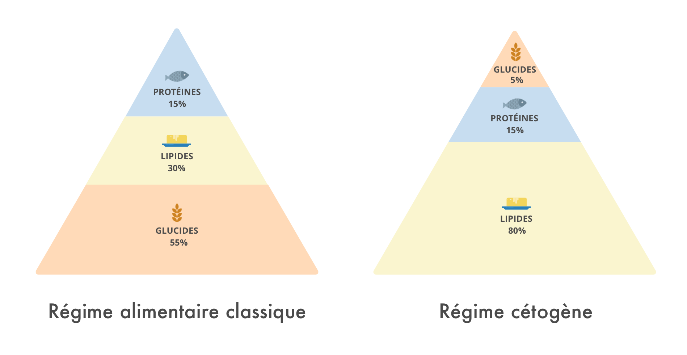
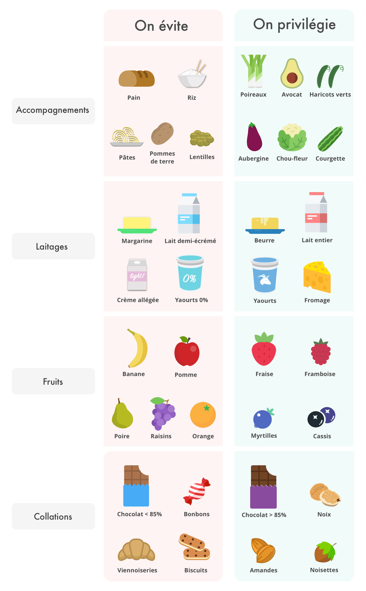

Le régime cétogène repose sur une alimentation très riche en graisses (ou lipides) et très pauvre en glucides. Notre alimentation moyenne comprend aujourd’hui à peu près 50 % de glucides, 35 % de lipides et 15 % de protéines (voir nos articles sur les glucides, les lipides et les protéines).
Dans une diète cétogène, le régime alimentaire est composé d’environ 5% de glucides, 15% de protéines et 80% de lipides ! Ses bénéfices sur la santé font l’objet de nombreuses publications. Avec l’aide du nutritionniste Anthony Berthou, on vous explique ce régime constitué essentiellement de graisses et ses bénéfices pour la santé. Attention cependant à bien lire l’article jusqu’au bout car il ne s’agit pas pour autant d’une méthode miracle. L’objectif de l’article est de présenter ce mode d’alimentation, sans pour autant le promouvoir.

Un régime qui mime les effets du jeûne
Les glucides nous sont principalement apportés par les pâtes, le pain, les céréales (riz, blé, avoine…), les fruits ou encore le sucre de table. Ils contiennent du sucre sous différentes formes, notamment du glucose et du fructose (voir notre article sur le sucre). Le glucose provenant des glucides va être utilisé comme source d’énergie prioritaire par les muscles, le cœur et le cerveau.
Lorsque qu’il est privé de cette source d’énergie, l’organisme va actionner un mécanisme d’urgence pour s’adapter à cette privation : la cétogenèse. Notre foie va produire de petites molécules, les cétones (ou corps cétoniques), afin d’alimenter notre corps en énergie, et notamment les organes dépendants du glucose comme le cerveau. Ces cétones sont produites par le foie à partir des graisses de l’alimentation.
Le régime cétogène vise à faire fonctionner le corps essentiellement avec les graisses et les corps cétoniques. Il reproduit ainsi en partie les effets du jeûne où le corps doit s’adapter à la privation de nourriture, et donc de glucose.

Des effets bénéfiques sur la santé
Tout d’abord, ce régime riche en graisses a prouvé ses effets sur le diabète et la perte de poids. En effet, ce régime pauvre en glucides permet de mieux réguler notre sensibilité à l’insuline. Or, chez les personnes diabétiques, la production d’insuline pour réguler le taux de sucre dans le sang est défaillante. Le régime cétogène permet de traiter le problème à la racine en limitant l’apport de glucides et donc la nécessité de production d’insuline. Comme les niveaux d’insuline diminuent, la résistance à l’insuline s’améliore. Cette meilleure gestion de la glycémie a aussi montré ses effets sur la perte de poids. Les fortes variations de glycémie entraînent une mauvaise gestion de notre appétit. En réduisant fortement les pics glycémiques, la diète cétogène permet ainsi de mieux réguler son appétit et sa perte de poids. Par ailleurs, en puisant directement son énergie dans les cellules graisseuses, cette alimentation permet de favoriser l’amincissement. Mais il ne s’agit pour autant pas d’un régime miracle : ce type d’alimentation peut entraîner des effets secondaires (voir plus bas).
Par ailleurs, certaines études ont montré des effets bénéfiques du régime cétogène sur la maladie d’Alzheimer. Le glucose constitue normalement la principale nourriture du cerveau (et donc des neurones). Mais, chez les personnes atteintes d’Alzheimer, le fonctionnement neuronal, et en particulier l’utilisation du glucose, est altéré. Grâce à une diète cétogène, les corps cétoniques vont alors agir comme des agents neuroprotecteurs en permettant la production d’une autre source d’énergie utilisable. Ils vont par ailleurs réduire la production de radicaux libres, des molécules qui s’attaquent à nos cellules lorsqu’elles sont présentes en excès dans notre organisme.
Ce régime pourrait également avoir des effets bénéfiques sur le cancer. Les cellules cancéreuses se nourrissent en effet essentiellement de glucose, et ont une activité d’assimilation du glucose et de production d’énergie accrue : jusqu’à 200 fois supérieure à des cellules saines. La diète cétogène pourrait contribuer à limiter la progression tumorale en limitant l’assimilation de glucose par les cellules cancéreuses, et donc leur production d’énergie. Attention, rien n’est établi pour le moment : des résultats intéressants ont été obtenus chez la souris (cancer de l’estomac et tumeurs cérébrales) mais aucune étude clinique solide n’a été pour le moment validée chez les patients cancéreux.
Enfin, la diète cétogène a montré des résultats bénéfiques sur le traitement de l’épilepsie, en permettant notamment de réduire les crises convulsives de 30 à 40% chez les enfants. L’épilepsie a longtemps été traitée entre autres par le jeûne, mais ce modèle ne pouvait être supporté sur une longue période, notamment par les enfants. L’alternative que représente la diète cétogène s’est donc rapidement imposée comme moyen de traitement plus durable contre l’épilepsie. En effet, les cétones produits par l’organisme possèdent des propriétés permettant de réduire les crises d’épilepsie. Par ailleurs, le glucose pourrait augmenter l’excitabilité des cellules nerveuses lorsqu’il apporte de l’énergie même si ce dernier point n’est pas validé pour le moment. Ce régime est en revanche moins efficace pour traiter l’épilepsie chez l’adulte.
Mais alors, qu’est-ce qu’on mange ?
Règle n°1 : Privilégier les aliments riches en graisses
- Les bonnes huiles : olive, colza, coco, noix, etc.
- Les laitages : lait entier et crème fraîche, lait de coco et crème de coco, fromages affinés au lait cru, yaourts, laits végétaux non sucrés
- La viande, le poisson et les œufs
- Les noix et graines : noix, noisettes, amandes, noix de cajou, pistaches, noix de pécan, graines de chia, graines de sésame
- Et pour remplacer les farines de céréales : farine de de coco, de noix, poudre d’amandes ou de noisettes, farine de soja (en quantité limitée, voir notre article sur le soja)
Règle n°2 : Restreindre sa consommation d’aliments riches en glucides
- Le sucre et les produits sucrés (bonbons, viennoiseries, chocolats contenant moins de 85% de cacao)
- Les aliments trop transformés, type plats préparés
- Les pâtes, riz et céréales
- Le pain
- Les aliments riches en amidon (pommes de terre, patate douce, etc)
- Les légumineuses (lentilles, pois chiches, etc)
- Les sodas et jus de fruits
Règle n°3 : Maintenir sa consommation de protéines au petit-déjeuner et au déjeuner
- Protéines animales : viande, poisson, oeufs
- Protéines végétales : soja, amandes, noix de cajou, etc.
Règle n°4 : Choisir des légumes pauvres en glucides et limiter les fruits
- Légumes : chou, endives, épinards, laitue, aubergine, asperge, concombre, courgette, fenouil, haricots verts, poireau, brocoli, céleri, poivron
- Fruits : les besoins en apports glucidiques varient d’un individu à l’autre. Les fruits sont exclus pour les personnes dont le seuil est faible. Pour les personnes dont le seuil est plus élevé, il est possible de consommer de petites baies (myrtilles, cassis, groseilles, framboises, fraises)

Un régime contraignant qui nécessite un suivi
Avant de vous lancer, ayez conscience que ce régime nécessite un changement profond et rigoureux des habitudes alimentaires ! Le régime cétogène est un régime qui nécessite d’être suivi de manière très stricte : tout écart entraîne un inconfort pendant un à deux jours.
Que vous envisagiez ce régime à des fins thérapeutiques ou non, il est indispensable d’être encadré par un professionnel de santé au moins au début. En effet, des calculs sont nécessaires quant au besoin énergétique individuel et aux portions de glucides, lipides et protéines. Notamment, ce régime doit nécessairement être isocalorique (c’est-à-dire que la quantité de calories absorbées ne doit pas diminuer), sinon vous risquez de produire des corps cétoniques en excès. Cela peut alors provoquer l’acidification du sang (appelée acidocétose) qui peut entraîner entre autres nausées, vomissements, constipation, augmentation de la fréquence respiratoire, voire coma dans les cas les plus graves. Il peut également entraîner des carences en minéraux (potassium notamment) car avec ce type d’alimentation, les reins éliminent de façon plus accélérée les minéraux. Il est donc nécessaires de vérifier régulièrement certaines constantes biologiques par une prise de sang, et de vérifier son taux de glucose et de cétones avec un glucomètre.
Il existe des régimes similaires un peu plus souples, comme les régimes Low Carb ou LCHF (Low Carb High Fat) : ils ont un objectif similaire mais représentent une alternative moins stricte au régime cétogène.
Pour approfondir le sujet, vous pouvez consulter l’article d’Anthony Berthou, qui explique notamment les mécanismes du régime cétogène et comment il peut être utilisé dans le cadre de la pratique du sport : http://www.sante-et-nutrition.com/regime-cetogene-sport/
- Dashti HM,Mathew TC, Khadada M and al. Beneficial effects of ketogenic diet in obese diabetic Mol Cell Biochem. 2007 Aug;302(1-2):249-56)
- K Sato, Y Kashiwaya, C A Keon, et al. Insulin, ketone bodies, and mitochondrial energy transduction. FASEB J 1995 9: 651-658
- Forsythe CE, Phinney SD and al. Comparison of low fat and low carbohydrate diets on circulating fatty acid composition and markers of inflammation. Lipids. 2008 Jan;43(1):65-77.
- Ketogenic diets and Alzheimer’s disease. Klaus W. Lange, Katharina M.Lange, Ewelina Makulska-Gertruda, Yukiko Nakamura, Andreas Reissmann, Shigehiko Kanaya, Joachim Hauser. Food Science and Human Wellness. Volume 6, Issue 1, March 2017 Pages 1-9
- Taylor MK et al. Feasibility and efficacy data from a ketogenic diet intervention in Alzheimer’s disease. Alzheimer’s & Dementia: Translational Research & Clinical Interventions. 2018;4:28-36.
- Alan W.C. Yuen, Isabel A. Walcutt, Josemir W. Sander : An acidosis-sparing ketogenic (ASK) diet to improve efficacy and reduce adverse effects in the treatment of refractory epilepsy. Epilepsy & Behavior 74 (2017) 15–21.
- Ghazavi A, Tonekaboni SH, Karimzadeh P, Nikibakhsh AA, Khajeh A, Fayyazi A. The ketogenic and atkins diets effect on intractable epilepsy: a comparison. Iran J Child Neurol. 2014 Summer;8(3):12-7.
- Neal, E.G., Chaffe, H.M., Edwards, N., Lawson, M., Schwartz, R., Fitzsimmons, G., Whitney, A., Cross, J.H., 2008. The ketogenic diet for the treatment of childhood epilepsy: a randomised controlled trial. Lancet Neurol. 7, 500–506
- Lv M, Zhu X, Wang H, Wang F, Guan W. Roles of Caloric Restriction, Ketogenic Diet and Intermittent Fasting during Initiation, Progression and Metastasis of Cancer in Animal Models: A Systematic Review and Meta-Analysis. PLoS One. 2014 Dec 11;9(12):e115147. doi: 10.1371/journal.pone.0115147. eCollection 2014.

https://www.forum-cetogene.com/
Bonjour,
A chaque fois que l’on parle de ce régime on dit qu’il faut le suivre « sous contrôle médical », or les médecins sont généralement ignorants de ce régime et des subtilités du système lipidique. De mon expérience leur en parler c’est se tirer une balle dans le pied.
Savez-vous comment trouver un médecin qui puisse être d’une aide quelconque (autrement que d’essayer l’annuaire dans l’ordre alphabétique jusqu’à en trouver un) ?
Cordialement
J’adhère au régime cétogène. J’ai acheté le livre Simplement Céto justement pour ça. http://bit.ly/simplementceto j’ai suivi les recettes de ce livre et ça me réussit.
Ai-je bien compris. Parlons nous bien d’un programme alimentaire cétogène de 10 semaines ?
Merci d’avance pour votre réponse.
Je tente de suivre au mieux un régime plus low carb que réellement cétogène ( car je me permets des écarts): ceci pour un cancer du sein détecté il y a deux ans, je devais perdre du poids avant de commencer le traitement anti hormones qui fait grossir;
Résultats: perte de 8kgs sans grosses difficultés en quelques mois, disparition des crises de colites qui m’empoisonnaient la vie et de douleurs d’estomac avec remontées acides. Il est vrai que le manque de pain et la diminution des fruits a été difficile.( je me fais du pain cétogène)
Néanmoins, pas de fringales, une énergie étonnante, et pas de douleurs articulaires malgré mon traitement.
Par contre si je craque pour quelque chose qui me fait réellement envie: des yaourts parfumés par exemple ou du pain : je ne sais pas me limiter, je l’avoue, je sais que je le paye!
Je suis sous anticoagulants( xeralto) et là aucune contre indication alimentaire.
Juste une expérience parmi d’autres, qui ne vaut ce qu’elle vaut.
Snif, je suis sous anticoagulants à vie et certains des aliments de ce régime (huiles d’olive et de colza) sont à consommer avec très grande modération.
dois je regarder les glucides ou les sucres quand je consulte une etiquette de produit pour calculer ma quantite journalière autorisée?
Le quinoa n’est pas une céréale.
OK dans la diète cétogène !
Ainsi, comme les glucides augmentent l’insuline, nous devrions nous en tenir principalement à la viande, qui est constituée de graisse et de protéines, pas de glucides, donc pas d’augmentation de l’insuline, non?
Faux. Nous savons depuis un demi-siècle que si vous donnez à quelqu’un un steak, pas de glucides, pas de sucre, pas d’amidon, leur insuline monte. Les glucides font monter votre insuline, mais les protéines aussi (183) (fig44).
En 1997, un indice d’insuline des aliments a été publié, classant 38 aliments (184). Selon vous, qu’est-ce qui cause un pic d’insuline plus important: une grosse pomme et tout son sucre, une tasse de farine d’avoine remplie de glucides, une assiette de pâtes à la farine blanche, un gros hamburger sans pain, pas de glucides du tout, ou la moitié d’une filet de saumon? La réponse est la viande. Vous pouvez constater qu’il n’y a pas de différence significative entre la pointe d’insuline provenant du bœuf, celle du poulet et du porc, elles sont toutes aussi élevées (fig45).
Ainsi, les aliments riches en protéines et en matières grasses peuvent induire une sécrétion importante d’insuline. En fait, les protéines de viande entraînent autant de libération d’insuline que le sucre pur (fig46).
Donc, selon leur propre croyance, s’ils pensaient réellement que l’insuline était la racine de tous les maux, les “low-carbers” mangeraient de grands bols de spaghettis chaque jour avant de toucher à de la viande. Oui, l’hyperinsulinémie (taux d’insuline trop élevé dans le sang), comme les diabétiques de type 2 ont, n’est pas une bonne chose et peut augmenter le risque de cancer de 10% (185) (fig47).
Extrait de « Guérir du diabète et vite! »,2019. Editions Ovadia.
Bonjour,
Les protéines augmente l’insuline mais beaucoup moins que les glucides, dans un régime cétonique la quantité maximale de protéines elle est limitée à 100 g, effectivement au-delà de cette quantité le corps la transforme en glucides ce qui augmente l’insuline dans le corps.
Cordialement
Bonjour
Vous écrivez: Le régime cétogène permet de traiter le problème à la racine en limitant l’apport de glucides et donc la nécessité de production d’insuline. Premièrement les glucides ne sont pas un problème dans le cas du diabète, ils sont même la solution. La cause de la résistance à l’insuline est la graisse saturée. Deuxièmement pourquoi le régime cétogène semble fonctionner au début ? Parce qu vous perdez du poids dans un premier temps mais les graisses des produits d’origines animales entretiennent la résistance à l’insuline ainsi quel’inflammation de bas grade. Vos artères se remplissent de de LDL grace à vos bactéries qui transforment la carnitine et la choline des produits animaux en TMA que le foie transforme en TMAO également toxique pour nos reins.A long termes ce régime est dangereux et il permet pour résumer de rentrer plus mince dans son cercueil. Je suis l’auteur de « Guérir du diabète et vite! » éditions Ovadia
très intéressant.
J’adore l’illustration !
Niveau -1 = régime glucidique (sucrerie et gluten)
Niveau 0 = régimes cétogène (lactose et caséine)
Niveau 1 = régime 100% carnivore (bactéries)
Niveau 2 = régime 100% carnivore avec de la viande de qualité bien cuite (en mangeant le gras et la peau + en rognant les os)
Bravo pour cet excelllent article ! Simple et compréhensible, bien loin des idées préconçues et des conseils de ces « nutritionnistes des années 80 » complètement dépassés que l’on peut voir dans les médias aujourd’hui.
Bonjour
Jai fait un commentaire que vous pouvez lire . Merci
Je trouve tout à fait dommage la publication de régimes de ce type sur ce site que j’apprécie par ailleurs, même si vous prenez le soin de mettre en garde le suivi nécessaire. Bien s’alimenter est déjà compliqué pour beaucoup de personnes qui ne maîtrisent déjà pas les notions élémentaires de l’équilibre alimentaire…
Bien cordialement
J aimerais essayer comment faire ?
Bonjour
Jai fait un commentaire que vous pouvez lire . Merci
Je suis au regime cetogene depuis 18j,j’ai perdu 4kg. Le régime est génial et je continue pour perdre ecore 4-5 kg. Et le plus important c’est que je n’ai pas faim.
C’est quoi tes plats? Tu manges combien de fois par jour? Fais tu du sport?
Je fais se régime depuis 3 mois déjà et lors de la période de jeûne je m’évanouis,
Je suis étourdi 24h/7 mais je crois que ce régime n’est pas pour moi mais peut-être pour d’autres
BONJOUR En effet cette méthode est fait surtout pour les sportifs et dans certaine maladie auto immune.
A quand un régime nutrition Blomy spécial keto?
Super article!
si vertains sont intéressés par aller un peu plus loin sur le régime cétogène, il y a le site: https://www.regimeketo.fr/regime-cetogene/ qui donne vraiment quelques wxcellents conseils
Bonjour
Jai fait un commentaire que vous pouvez lire . Merci
Bonsoir je voudrais savoir pourquoi certains régimes ceto proposent des aliments comme le beurre la crème fraîche ou les yaourts alors que d autres régimes ceto les éliminent ?? Faut il en manger du coup ? Merci d votre réponse .
Je précise que j’ai fait une recherche approfondie sur le régime cétogénique dans les bases de données Cochrane et Medline. J’en ai fait un chapitre entier dans un de mes livres il y a 2 ans.
Pour ceux qui lisent l’anglais et comprennent la biologie, bien des articles sont payants (35 € en moyenne par article).
Il existe un excellent moyen de contourner cet inconvénient : aller sur un site de base de données, avec le moteur de recherche PUBMED par exemple, puis copier le DOI de l’article, et le coller dans le site SCI-HUB (qui change régulièrement de lieu) : l’accès est gratuit !!!
ce site pirate les bases de données pour rendre non payant la recherche en sciences !
Qu’on se le dise… si l’on peut lire l’anglais bien entendu…
à propos du régime cétogène…
on voit ce que l’on veut bien voir…
il est indubitable qu’un régime cétogène est parfaitement indiqué dans les épilepsies graves et réfractaires de l’enfant.
Cependant, ce régime modifie très fortement la composition du microbiote, dans un sens très pro-inflammatoire, et modifie fortement l’activation de nombreux gènes dudit microbiote. On le sait depuis longtemps et de manière redondante. Les études sur le génome du microbiote ont été faites lors des changements de régime alimentaire! En effet, pour obtenir facilement et rapidement des souris diabétiques, un régime hyper lipidique est utilisé en routine de laboratoire. Voilà pourquoi je suis un peu dubitatif sur les effets du régime cétogènique, même s’il y a des résultats indiscutables. Sans doute faudrait-il envisager les différences d’activation génétique du microbiote intestinal entre régime cétogénique et régime hyperlipidique : la dose de lipides ingérés est en effet quand même différente… Cependant, un microbiote nourri aux lipides produit constamment un métabolisme pro-inflammatoire. Et fait disparaître les colonies d’Akkermansia muciniphila, une bactérie dont l’absence est constamment retrouvée chez les diabétiques, et dont la présence améliore constamment le diabète (travaux entre autres de Patrice Cani, Louvain).
Bonsoir
Vos commentaires m’ont intéressée.
En effet j’ai un diabète 2 dépiste depuis 2-3 mois. Une des voies dont on m’a parlé est la diete cétogène avec semble-t-il d’excellents résultats sur notamment la stabilisation de la glycémie.
Pour ma part je reste dubitative. Mes « vieux restes » de cours de physiologie cellulaire me font penser que forcer notre organisme à fonctionner ainsi n’est pas l’idéal.
Une autre voie est la chrinibutrition ….
Qu’en pensez-vous?
Merci de votre retour.
Merci pour vos articles, tjs bien ficelés et intéressants
Pour celui sur le régime cétogène il ne semble pas évident d’y arriver seul, Qui faut il contacter ???
C’est exactement le contraire. A. muciniphila augmente. Et cette diète protège des inflammations. Elle n’est absolument pas pro-inflammatoire !
Je connais beaucoup de gens qui se sont débarrassés de : rhume des foins, eczéma, candida… et même phobies. Etc…
https://www.biocodexmicrobiotainstitute.com/pro/publications/regime-cetogene-et-epilepsie-le-microbiote-intestinal-se-revele-protecteur
L’indice glycémique est une notion purement technique qui n’a aucun reflet physiologique. Cet index glycémique pourtant tant « vanté » est obtenu dans un appareillage de laboratoire, pas dans un intestin. Que deviennent les index glycémiques lorsque l’on fait un repas ? Personne ne peut le dire. Les biologistes ont alors fort justement parlé de « charge glycémique, » prenant en compte la valeur glycémique d’un repas entier. Un des premiers en France a été le Pr. Zermatti qui a critiqué la notion d’index clycémique.
En réalité physiologique, il existe un moyen fort simple de faire chuter l’index glycémique in situ à tout coup : c’est ce que l’on a appelé « l’effet lentille ». La consommation de lentilles (ou de pois chiches), bref de polysaccharides à dégradation lente (sucres « lents ») écrête les pics d’insuline et de glycémie.
Enfin, bien des aliments simples voient leur index glycémique varier fortement selon leur température : telles les pommes de terre chaudes, index glycémique fort élevé ; refroidies (ou tièdes), l’index chute de moitié…
La notion d’index glycémique n’a aucune valeur biologique, désolé, on ne peut pas en tenir compte en nutrition humaine… c’est peut-être dommage, mais c’est comme ça…
Article rédigé avec compétence et sans parti pris. Il manque, selon moi, une information basique qu’on ne retrouve ni dans cet article, ni sur l’appli, c’est l’indice glycémique. Pour trouver ces informations complémentaires TRÈS IMPORTANTES reportez-vous aux sites et applications pour les patients diabétique
Le lait de coco et la crème de coco + laits végétaux non sucrés sont des laitages ??? C’est faux …
Aucunes sources dans votre article, ce qui est à déplorer.
Oui le régime cétogène n’est pas un régime miracle et en tant que professionnel de santé, je ne le conseille vraiment pas à mes patients (surtout pas aux diabétiques).
Il manque également les taux d’omega 3 et 6 ainsi que leur rapport. ce serait vraiment parfait alors
Blomy une aide tres interessante, avec cependant un gros defaut à mon sens. il manque clairement l’appreciation versus les sucres totaux et non pas uniquement les sucres ajoutés.
Je suis extrêmement circonspecte face à tous ces nouveaux régimes à la mode. Se lancer dans ce régime sans y être invité par un médecin nutritionniste et sans raison médicale impérative me paraît bien risqué car il est très déséquilibré. J’apprécie Blomy, mais vous ne devriez pas promouvoir des régimes de ce genre dont l’innocuité n’est nullement prouvée et dont l’intérêt n’existe que dans des cas particuliers;
vous n’avez donc rien lu. Il est écrit qu’en aucun cas ce régime n’était promu. » L’objectif de l’article est de présenter ce mode d’alimentation, sans pour autant le promouvoir » !
Très intéressant
Bonjour et merci pour cet article fort intéressant. L’application Blomy est aussi très utile.
Très bon résumé.
Je vous recommande ce livre très complet (https://blomy.io/le-regime-cetogene-la-revanche-du-gras/) qui m’aide beaucoup au quotidien.
😉
Oups, je me suis trompée dans le commentaire précédent.
Le lien du livre pour ceux que ça intéresse :
> https://amzn.to/2AmlFOk
Si commander sur Amazon et participer à l’hégémonie américaine ne vous gène pas, bien sur
Je cherche un chocolat noir .Si quelqu’un en a trouvé un bien et que Blomy accepte je suis preneuse!
Merci
Bonjour
Je vous conseille le chocolat noir en tablettes « Togo 95% » Alter Eco que je trouve au rayon bio de Géant Casino
Il est très bon (à mon goût car je n’arrive pas à manger du 100 %)
Je te le conseille aussi : il est génial je peux bouffer comme un gros porc sans prendre un gramme !
Bonjour
Je regrette de ne pas pouvoir me servir de l’appli quand je fais mes courses car pas de réseau dans la plupart des grandes surfaces, dommage !
Bonjours
Est ce que l’applicat Blomy peut fonctionner en Autriche
ce n’est vraiment pas sûr. pour ma part j’achète des produits en Suisse et l’application ne les reconnait pas. le code barre des produits différent pour chaque pays.
J’ai suivi un régime cétogène suite à un cancer de la vessie de haut grade (G3) car des cancérologues avaient obtenus de très bons résultats chez leurs patients ayant suivi ce régime.
j’ai suivi une immunothérapie que j’ai bien supporté et depuis deux ans je n’ai plus aucune tumeur de revenue…
je ne sais pas si cela vient du régime de l’immunothérapie ou du cumul des deux, en tous cas en ce qui me concerne seul le résultat compte et vous comprendrez aisément pourquoi…
Depuis j’ai gardé cette habitude de consommer des aliments à faible indice glycémique et je me sens en pleine forme, de plus j’ai un IMC de 22 stable donc c’est efficace également pour la stabilisation du poids.
Existe-t-il une application adaptée pour les produits disponibles au Québec ?
Merci pour vos précieux conseils maintenant que j’ai installé votre application je m’en sert régulièrement et j’en suis ravie
Cela paraît intéressant, mais lorsque vous avez du cholestérol et un problème hypothyroidie dois je suivre ce conseil
Je suis en hypothyroïdie et l’alimentation cetogene m’aide beaucoup depuis plusieurs années. Quant au cholestérol je ne suis pas directement concernée mais il existe de nombreuses études qui montrent qu’une alimentation cetogene n’aggrave rien bien au contraire. Personnellement je pense que c’est une alimentation bénéfique pour de nombreux maux. Il existe énormément de publications pour aider à se faire un avis.
Bonjour, J’avais également une hypothyroïdie dont j’ai pu rétablir parfaitement le fonctionnement au bout d’un an et demi et d’une façon durable (preuves à l’appui) en supprimant totalement le gluten de mon alimentation. Je ne suis pas la seule dans ce cas là. Vous pouvez voir les vidéos de Thierry Casasnova sur le sujet. J’ai adopté également le régime cétogène en limitant les apports de glucides et privilégiant le gras. Vous pouvez lire à ce sujet les livres du Dr Perlmutter. De plus, j’ai introduit dans mon alimentation des jus de légumes crus. Je revis.
Oui, vous verrez ça baisse.
La seule chose utile à retenir est qu’il faut limiter le sucre au maximum. Pour le reste on croirait une étude subventionnée par l’industrie laitière et l’industrie de la viande. Quel recul!
t’es ben épais, t’as rien compris ?????????
pas du tout!Il faut limiter les produit laitiers et manger oeuf,volaille, poissons et privilégier les oméga 3,donc éviter boeuf,porc et agneau !!
Pourquoi ?
Bonsoir mais je ne comprends pas pourquoi on évite les fruits du style banane pomme orange poire et et raisins,??? On m’a toujours dit que les fruits c’est bon pour la santé
Et bien on vous a menti (sourire)
https://le-quotidien-du-patient.fr/article/au-vert/culture/livres/2018/10/31/les-pouvoirs-caches-du-foie/
Youpi Blomy, j’adore !
Julie je t’aime 🙂
Pour moi ce n’est pas contraignant, puisque nous avons toujours mangé comme cela en préfèrant la cuisine maison et non industrielle.
Nous avons toujours prévilégié votre colonne de droite. Car nous ne sommes pas « sucre » donc pas de bonbons, de gâteaux du commerce et de viennoiseries.
Les légumes sont ceux du jardin le plus souvent. Les laitages ceux de la ferme.
Charcuteries restent occationnelles.
Donc conclusion cela réussi à ceux qui mangent mal.
Bonjour,
Rien de nouveau sous le soleil !! Ce régime revient tout simplement à réduire les féculents et sucres de son alimentation. Rien de plus. L’énergie est alors tirée des lipides de l’organisme…..
Bonjour
J’ ai perdu 5 kg grâce à une diet cétogène.
Parfait….Sauf que pratiquant beaucoup le sport j’ ai déclenché une hypertension artérielle de stade 3. 18/7 avec vertiges..
Donc faites vous suivre..
Bien sportivement
JE TROUVE QUE TOUS LES REGIMES QUI SUPPRIMENT DES ELEMENTS DE LEUR ALIMENTATION EST NOCIF ? IL FAUT MANGER DE TOUT ET RÉDUIRE EN QUANTITÉ CERTAINS PRODUITS ? UNE POMME DE TEMPS EN TEMPS OU UNE BANANE NE PEUT PAS FAIRE DE MAL
crie pas bolosse
lol
Il ne faut pas manger de tout,car il y a bcp de « merdes » ds l’alimentation modernes!Et sans les glucides ,ce n’est pas si abérant;à part les fruits,y’en a pas dans la nature !!(on ne suce pas les grains de blé ..)
bonjour, je suis la méthode cétogène en dehors de toute maladie, ce n’est ni restrictif ni dangereux. De plus il existe de très nombreuses études du sujet depuis 1880… Autant dire que c’est une méthode robuste qui a fait ses preuve. Mais je n’ai pas de doute que les différents lobbies ne voient pas cela d’un très bon oeil.
Belle Article.
Moi, je dis que le gras et les protéines sont les meilleurs sources de nourriture.
Le sucre est très mauvais pour la santé, d’ou les maladies, et autres vu que les cellules ce nourrissent principalement de Sucre.. Vous arrêtez le sucre, votre corps est en meilleurs santé..
Le seul point négatif, ce sont les fibres.. Mais, j’ai trouvée une plante qui m’aide et pour 100Gr
: 88gr de fibre solubles..
Je continue donc à manger du bon gras (huiles, graines..), des protéines (animale ou végétales), de l’eau à volonté et des fibres (plantes).. et aucuns sucres dans mon alimentation !
Bonjour , de quelle plante s’agit il ? Merci
Super article !!
Je n’avais pas vu :
« Notamment, ce régime doit nécessairement être isocalorique (c’est-à-dire que la quantité de calories absorbées ne doit pas diminuer), sinon vous risquez de produire des corps cétoniques en excès. Cela peut alors provoquer l’acidification du sang (appelée acidocétose) qui peut entraîner entre autres nausées, vomissements, constipation, augmentation de la fréquence respiratoire, voire coma dans les cas les plus graves. »
Donc quand on jeûne quelques jours, puisqu’on n’est plus en isocalorique et qu’on est en cétose, on provoque l’acidification du sang appelée acidocétose ? 😀
Pour info, que se passe-t-il si on a une concentration élevée de corps cétoniques dans le sang ? L’organisme, et en particulier les muscles, se met à utiliser de plus en plus ces corps cétoniques. Ce faisant, il utilise de moins en moins les acides gras puisqu’il trouve son énergie ailleurs. Et comme la bêta-oxydation des acides gras est un précurseur de la production de cétones, le taux de cétones diminue.
La nature est bien faite, n’est-ce pas ? 😉
« Dans une diète cétogène, le régime alimentaire est composé d’environ 5% de glucides, 15% de protéines et 80% de lipides ! » – Encore un article qui mélange tout et laisse à croire que le seul cétogène c’est le cétogène thérapeutique…
« Lorsque qu’il est privé de cette source d’énergie, l’organisme va actionner un mécanisme d’urgence pour s’adapter à cette privation. » – Et après des mois de cétose, on est toujours en urgence ? Et pourquoi ça ne serait pas la décharge d’insuline pour contrer les effets d’un repas riche en glucides qui menace son équilibre à très court terme le véritable mécanisme d’urgence ?
Bref, ce qui est développé ici a au moins 10 ans de retard sur l’état des connaissances actuelles.
Bonjour, je m’intéresse fortement à ce mode alimentaire mais j’ai peur que celui-ci me soit trop restrictif. J’aime cuisiner sainement de bon petits plats tout en me faisant plaisir. J’ai essayer pendant 1 semaine de me tenir au régime cétogène et j’ai pu rapidement en noter les bienfaits. Auriez-vous des conseils pour adapter au mieux ce régime ?
Bonjour Lucile, je vous invite pour cela à vous rapprocher d’un professionnel de santé spécialiste du sujet qui pourra vous conseiller en fonction de votre situation personnelle. Les régimes Low Carb ou LCHF (Low Carb High Fat) sont par exemple une alternative plus souple au régime cétogène.
Une suite améliorée du régime du Dr Atkins des années 1970
Régime où l’on supprimait les hydrates de carbone et on mangeait les graisses. On testait l’efficacité du régime en trempant dans les urines des bandelettes pour vérifier si on éliminait l’acétone
ALORS…Il faut rajouter le % de glucides dans votre application…, très utile par ailleurs !
Merci.
Mais attention a la confusion des genres avec cet article!…
Bonjour, encore une fois, j’aime bien vos articles. Ils sont réfléchis et « posés ». Ils ne sont pas des » dictats » mais plutôt un complément de réflexion pour ceux qui s’intéressent à ces sujets. Blomy, c’est bien !
Un grand merci Frédéric 🙂
super continuer bonne journée
Merci beaucoup !
danger!!!! pour l’augmentation du taux de cholestérol et problèmes rénaux ! à ne pas faire sans analyses et médecin et selon l’age. on peut être déjà en hypercholestérolémie sans le savoir!!! donc attention ⚠️
Bonjour Mariejo,
Tout d’abord, c’est l’oxydation du cholestérol qui pose davantage problème que sa quantité. Par ailleurs, si l’excès de cholestérol peut contribuer à augmenter le risque de maladies cardio-vasculaires lorsqu’il est oxydé, il semble en revanche aujourd’hui loin d’être le facteur le plus déterminant : la consommation excessive de sucre semble par exemple davantage impactant que le cholestérol sur les maladies cardiovasculaires. Je vous invite à lire notre encart sur le sujet dans l’article suivant : https://blomy.io/beurre-ou-margarine/
Mais vous avez tout à fait raison : il est indispensable pour suivre ce type d’alimentation d’être accompagné par un professionnelle de santé et de réaliser des analyses pour vérifier que l’organisme réagit bien.
Merci pour tout ses renseignements.
Cela fait a peu près un mois , que j’ai arrêté le sucre ajouté.
Avec plaisir, ravie que l’article vous plaise.
Après avoir lu, me voici déconcertée. Ma nutritionniste me demande de ne pas dépasser 5 g de graisse pour 100 g, et 15 g par portion . Rien sur les glucides alors que je dois manger des pâtes, des légumes. 1 fruit pat jour, bien entendu out toutes confiseries?biscuits etc. Un peu de viande,de poisson, très peu de pain. Ne pas dépasser,jamais, 5 g de graisse pour 100 g de nourriture avec maxi 15 g pour le repas. Voilà ! Nous sommes perdues..
Bonjour, moi c’est 30 g/jour (10g de beurre le matin, 10 et 10 g d’huile pour cuisson ou assaisonnements) peu de pain, féculents 1X 100 g/semaine, fruits 3x/jour, légumes à volonté, viandes blanches 2X/jour, glucides (sucre abandon, vienoiseries/gâteaux/chocolat 1X 100g /semaine, charcuterie idem)
A savoir que le sucre est en excédent dans tous aliments, donc inutile d’en ajouter (lire la teneur en sucre pour 100 g sur les boites ) sachant qu’un sucre industriel = 5 g et donc 2 insignifiants biscuits = 10 g déjà.
Change de nutritionniste.
Bonjour Pat, les recommandations de votre nutritionniste sont basées sur un régime occidental traditionnel, où l’on consomme beaucoup de glucides et où l’association glucides + graisses pose problème. Il s’agit ici d’un mode d’alimentation totalement différent, qui doit être pris dans son ensemble si on veut le suivre.
Bonjour.
J’aime beaucoup votre application,elle me guide pendant mes courses.
Toutefois je suis un peu ambivalente quant à certaines restrictions sur certains aliments comme les légumes secs,qu’on ne mange pas assez ainsi que l’élimination de certains fruits quand on sait que le Pnns recommande 5 fruits et légumes par jour et que les français on du mal à suivre cette indication.
Concernant les laitages comme les yaourts, ce sont de faux amis. J’ai moi même revu ma façon de manger avec une nutritionniste et j’ai éliminé les yaourts de mon alimentation. J’ai perdu du poids , je n’ai plus d’oedeme. Quant aux féculents,ils sont importants, il suffit de les peser pour ne pas en abuser. Pour le reste c’est surtout le plaisir qui doit rester la priorité quand on mange 😉
bien sûr
Bonjour Franco. Bien entendu je n’ajoute aucun sucre et je veille a acheter des produits avec un minimum de glucides. Je ne sucre jamais. J’ai réagi par rapport aux pâtes interdites dans le régime conseillé (gras),alors que ma nutrionniste les conseille.
Bonjour Pat, je viens avec un peu de retard c’est le weekend et c’est bon pour faire du lard, je rigole, le minimum de sucre je le trouve dans les produits bio, sinon les pâtes ou féculents sont interdits dans un début de régime et on les réintroduits plus tard dans la procédure de stabilisation en petites quantités par semaine car il faut prendre en compte le pain, le riz, la pizza, les patates, etc…il faut savoir si on veut garder une ligne et une santé ou des pâtes tous les jours, c’est un rital mangeur de pâtes 360/365 qui parle.
Tout a fait d’accord ,tout est question d’équilibre et de bon sens 🙂
Bonjour, je vous copie la réponse du nutritionniste Anthony Berthou faite un peu plus bas sur le sujet de l’équilibre :
« Concernant l’alimentation variée et équilibrée, nous sommes tout à fait d’accord sur le principe, théorique. Toutefois dans la réalité individuelle, au même titre que la profusion d’informations sur internet engendre une véritable cacophonie nutritionnelle, c’est un conseil bien vaste dont beaucoup ne peuvent se contenter. D’une part parce que les facteurs pouvant expliquer une modification de l’état nutritionnel sont tels qu’il est impossible de se contenter d’une ananmèse alimentaire sans l’associer à l’analyse fine des troubles fonctionnels voire des perturbations biologiques en lien avec les nutriments étudiés. Par ailleurs, le simple principe des recommandations est fondé sur la loi de Gauss, écartant de facto environ 3 millions de personnes pour la population française, indépendamment de toute modification de l’hygiène de vie de la personne ou de tout facteur d’altération de l’assimilation. Sans parler du fait que les bases de données alimentaires ne sont que de la pure théorie. Quelle base peut se justifier d’être pertinente au regard des effets de mode de culture (ou d’élevage), du conservation ou encore de cuisson sur la qualité nutritionnelle des aliments. Ciqual ou USDA, elles ont toutes nombres de lacunes. Enfin et c’est là à mon sens le plus important, les connaissances issues d’une formation, aussi pertinente soit-elle et quel que soit le domaine d’activité, méritent d’être actualisées, confortées et pourquoi pas… reconsidérées en fonction d’une littérature scientifique récente et… indépendante, quitte à revoir ses croyances initiales, aussi fondées soient-elles au moment où elles ont été acquises. Certains le font très bien, d’autres le refusent au risque de tomber dans le dogmatisme. Dans toutes les professions »
Comment peut-on en 2018 encore restreindre la nutrition à proteines, lipides et glucides ? N’importe quel aliment (brut) contient entre 500 et 1000 substances bioactives dont on ne connait pour la plupart pas encore leurs effets ni leurs synergies… D’autre part, même, en remontant sur des millions d’années, l’être humain n’a JAMAIS mangé comme cela ! Si ce type de régime très spécifique peut avoir son utilité dans quelques cas médicaux précis… et rares, il n’est absolument pas à recommander pour qui que ce soit et ne sert strictement à rien à part se désociabiliser et s’éloigner du bon sens alimentaire ! Les études scientifiques d’intervention en double aveugle avec une puissance statististique suffisante se comptent sur les doigts d’une seule main dans le domaine de la nutrition. Tout le reste est interprétation, au mieux observation d’un effet où la relation de cause à effet ne peut être démontrée et finalement retombe irrémédiablement au niveau d’un effet de mode médiatique… Le mode alimentaire DASH, considéré pour la Xème fois meilleur « régime » du monde, reprend TOUT SIMPLEMENT les bases de l’alimentation humaine telles qu’elle devrait théoriquement être… sans en faire trop ni laisser croire à un quelconque miracle.
Propos intéressants et mesurés, merci pour cet article
Avec plaisir 🙂
Très bon article, clair et bien documenté
Merci beaucoup !
Tout d’abord je trouve que votre application est très au point et très utile et je la propose aux parents pour les aider dans leurs choix alimentaires. Je ne suis pas la seule à vous recommander et Serge Hercberg directeur du Programme national nutrition santé (PNNS) le fait aussi.
Mais je suis préoccupée par certaines dérives dans vos récents articles et je trouve que vous vous éloignez de plus en plus des objectifs du PNNS, qui sont pourtant à la base de l’appication, à savoir une alimentation équilibrée .
Votre article est ambigu dans son titre et sa présentation. Il n’est pas clairement expliqué dans quel objectif on devrait entreprendre un tel régime, et les commentaires montrent que beaucoup ont compris que ce serait un régime adapté à la perte de poids ponctuelle. Et vous évoquez aussi un régime plus léger qui ne nécessiterait pas de suivi médical qui est le LCHF, qui lui est prôné comme un régime naturel favorable à la santé et qui devrait être utilisé A LA PLACE du régime préconisé par les recommandations.
Comme votre illustration le montre clairement il s’agit d’une inversion de la pyramide alimentaire, donc pas quelque chose de tout à fait anodin.
Un régime qui active une voie métabolique d’ »urgence » et qui nécessite un suivi médical, ne peut pas être considéré comme « naturel ». Je parle là du régime cétogène, qui est proposé particulièrement aux sportifs pratiquant une activité intense, ce que le Français moyen est loin d’être.
Les bases scientifiques sur lesquelles repose cette mode des régimes riches en graisses saturées et en protéines sont plutôt minces : spéculations en partant de connaissances parcellaires des voies métaboliques et en les présentant de manière biaisée, critères subsidiaires, études in vitro, petites études mal conçues. Et son succès vient en partie de son apparence contestataire.
Il faut rappeler que l’épidémie d’obésité est apparue dans le monde avec l’avènement de l’alimentation transformée qui a cïncidé avec un enrichissement de notre alimentation, qui était jusqu’à alors basée sur les glucides, en protéines d’origine animale et qui s’est aussi accompagnée d’une REDUCTION des glucides et une augmentation, par contre, de la part des sucres dans les glucides.
Je ne connais pas d’étude bien menée qui ait démontré une supériorité de ce type de régime au niveau de la mortalité ou des bénéfices pour la santé à long terme sur les régimes de type méditerranéen ou DASH, ni, non plus sur la perte de poids, à apport calorique égal.
Vous laissez entendre que ce régime serait bénéfique sur le cancer. Il est clairement établi que la consommation importante de viande rouge favorise la survenue de cancers du colon et du pancréas et son rôle est suspecté dans les cancers du sein et de la vessie. http://www.e-cancer.fr/Expertises-et-publications/Catalogue-des-publications/Synthese-Nutrition-et-prevention-primaires-des-cancers-actualisation-des-donnees
Vous déconseillez spécifiquement la consommation de légumes secs au prétexte qu’il s’agit d’un apport glucidique alors qu’elle est dorénavant conseillée par les nouvelles recommandations et que cette catégorie d’aliments est très peu consommée.
Un aperçu des régimes pratiqués dans le monde montre que les populations en meilleure santé ont des régimes où les glucides sont prépondérants et les viandes peu consommées (Japon, régime d’Okinawa). Tandis que la diète américaine est une de celles qui se rapprochent le plus du modèle de la LCHF, avec une forte consommation d’œufs de viande et de produits laitiers et une faible consommation de céréales.
L’approche sous tendue par ce régime est simpliste, en confondant, notamment, tous les glucides, et en présentant les graisses saturées comme favorables à la santé (il y a peu tout cela était la faute du lobby deshuiles végétales pour les militants du LCHF) et il est important qu’une application comme la vôtre, qui est très populaire, fasse la part des choses
Merci de remettre les choses un peu en ordre !
Merci de refaire le point sur cet article et de recadrer le contexte
Merci pour ce complément d informations
Bonjour Dr Michal-Teitelbaum,
Je me permets de répondre sur la partie nutritionnelle. Il me semble que l’objectif des articles Blomy est d’apporter une vision synthétique et vulgarisée des sujets d’actualité, sans pour autant promouvoir la thématique abordée de manière absolue. Le régime cétogène fait partie de ces sujets médiatisés, avec toutes les dérives que cela comporte.
En effet, articuler le texte en précisant bien les objectifs de départ aurait sans doute permis d’éviter l’ambiguïté évoquée. Concernant le modèle LCHF par contre, il s’agit d’une donnée abstraite par définition : entre les recommandations d’apport glucidique du régime cétogène et du PNNS (qui mériteraient elles aussi quelques nuances, mais c’est un autre sujet), tout modèle proposant moins de glucides que les recommandations officielles peut être considéré comme LCHF, ce qui induit alors beaucoup de différences possibles… Au regard des conséquences possibles d’une alimentation insulino-secrétrice sur le surpoids, les troubles métaboliques et le diabète, conseiller de réduire les apports glucidiques de manière modérée (au moins concernant l’aspect qualitatif sur la charge glycémique) ne semble pas incompatible avec une alimentation-santé. Les modèles de référence que vous citez, et dont je partage totalement l’intérêt, contiennent en effet des glucides, mais au demeurant à la charge glycémique bien moindre que le modèle occidental et que le PNNS considère peu (la notion d’index glycémique vient juste d’être « introduite » alors que les travaux de Jetkins datent de la fin des années 70…). Je laisserai Blomy répondre quant à la structuration de l’article et la pyramide illustrée, mais là encore à mon sens il s’agit d’exposer à travers l’article ce que représente le modèle cétogène, pas d’une recommandation universelle en ce sens.
Concernant le débat sur le fait que la voie cétogène est une voie d’urgence, sur le principe oui. Toutefois, là aussi la cétogénèse est souvent considérée, y compris par des professionnels, selon une logique du tout ou rien. Elle débute pourtant dès la fin de la première journée de privation glucidique, mais en effet une période moyenne de trois jours est nécessaire pour permettre à l’organisme de couvrir jusqu’à 40% des besoins énergétiques grâce aux corps cétoniques (70% après 40 jours), soit une production d’environ 150g par jour de corps cétoniques, contre environ 35g après une nuit de jeûne (et jusqu’à 280g par jour (7–10 mmol/L) après 5 jours de jeûne, avant d’atteindre un niveau plateau). Ces données ne sont pas récentes (ex. Balasse EO. Kinetics of ketone body metabolism in fasting humans. Metabolism. 1979;28(1):41–50. ). Au regard de l’évolution de l’alimentation depuis le paléolithique, il a été établi par plusieurs auteurs sérieux (dont Cordain) qu’il s’agit davantage d’une voie adaptative que d’urgence stricto sensu. Concernant les sportifs qui l’utilisent, ils le font dans le cadre d’une activité à faible intensité (et non ipas ntense, situation dans laquelle la cétogènese est reconnue comme délétère) dans le but de stimuler l’induction enzymatique et la synthèse mitochondriale, ce qui a pour effet de favoriser la voie lipolytique sur le long terme, mais au contraire de désadapter l’athlète concernant ses capacités d’oxydation glucidique. Les voies énergétiques s’intègrent dans une régulation systémique, dans laquelle la cétogène a sa place. Bien que je ne sois pas favorable à titre personnel à ce régime, cela ne m’empêche pas pour autant de le considérer.
Concernant le manque de données, un certain nombre d’études démontrant l’intérêt d’un régime pauvre en glucides sont quand même disponibles et il est bien précisé dans l’article que certaines données sont issues d’études in vitro (dont spontanément en dehors de celles indiquées dans l’article : Phinney SD, Bistrian BR, Evans WJ, et al. The human metabolic response to chronic ketosis without caloric restriction: preservation of submaximal exercise capability with reduced carbohydrate oxidation. Metabolism. 1983;32(8):769–76. Dashti HM,Mathew TC, Khadada M and al. Beneficial effects of ketogenic diet in obese diabetic Mol Cell Biochem. 2007 Aug;302(1-2):249-56). Tadahiro Shimazu, Matthew D. Hirschey and al. Suppression of Oxidative Stress by b-Hydroxybutyrate, an Endogenous Histone Deacetylase Inhibitor. Science 2013 Jan 11;339(6116):211-4. / K Sato, Y Kashiwaya, C A Keon, et al. Insulin, ketone bodies, and mitochondrial energy transduction. FASEB J 1995 9: 651-658 Volek JS, Noakes T, Phinney SD. Rethinking fat as a fuel for endurance exercise. Eur J Sport Sci. 2015;15(1):13–20. Thompson, J.R., and Wu, G. (1991). The effect of ketone bodies on nitrogen metabolism in skeletal muscle. Comp. Biochem. Physiol. B 100, 209–216.
Forsythe CE, Phinney SD and al. Comparison of low fat and low carbohydrate diets on circulating fatty acid composition and markers of inflammation. 2008 Jan;43(1):65-77.). Pour autant, elles démontrent un intérêt dans un cadre précis et ne doivent nullement se prétendre comme des références permettant d’appliquer un tel modèle à une population sans avoir précisé l’ensemble des recommandations nutritionnelles, en dehors du simple apport glucidique (ce qui représente un des principaux biais des études actuelles, que l’on parle de modèle hyper ou hypoglucidique). L’étude Pure publiée dans The Lancet, aussi critiquable soit-elle sur certains points, demeure également intéressante à considérer. A l’inverse, les études mettant en évidence des bénéfices significatifs sur la santé, notamment concernant les troubles métaboliques, d’un modèle fortement insulino-secréteur sont-elles si nombreuses et indépendantes ? Quelles études peuvent prétendre intégrer la notion de réponse glycémique aux glucides consommés ? Les conclusions sont-elles attribuables au seul paramètre glucidique ? là aussi, les biais peuvent vite apparaitre…
Je ne suis nullement promoteur d’une alimentation riche en graisses saturées et en protéines : je me permets toutefois de rappeler toutefois que le modèle cétogène intègre 12 à 15% de l’AET (ou 1,2k/kg poids corporel/j) sous forme de protéines, il ne s’agit nullement d’un régime riche en protéines, attention à la confusion qui est elle aussi largement diffusée par rapport au modèle hyperprotéiné et surtout hypocalorique (élément de régulation majeur dans les conséquences métaboliques). Au même titre qu’apporter des acides gras saturés en majorité n’est pas indispensable dans le cétogène, même si beaucoup conseillent les AG-CC/CM avec l’huile de coco.
Nous sommes tout à fait en accord concernant la consommation de viande rouge et les recommandations du CIRC sont bien claires en ce sens. Mais il y a là un biais de conclusion… le régime cétogène peut être réalisé sans consommation de viande rouge.
Je ne pense pas que Blomy déconseille les légumes secs, bien au contraire : cet article n’est encore une fois pas la synthèse de leurs recommandations mais une présentation du modèle cétogène. Ce sont deux choses très différentes.
Concernant les modèles santé évoqués (y compris dans DASH) je pense notamment à la diète méditerranéenne et Okinawa, je suis le premier à les considérer comme des modèles de référence. Mais attention au raccourci consistant à préciser que ces modèles sont bénéfiques grâce à leur quantité d’apport glucidique : ils le sont avant tout par leur teneur en antioxydants (dont les légumes en majeur partie), épices, aromates, algues, produits céréaliers à faible charge glycémique (légumineuses notamment), cuisson douce, apport lipidique important en acides gras essentiels (acide oléïque et alpha-linolénique notamment), faible consommation de viande, surtout riche en acide arachidonique, mode de vie, niveau d’activité physique, etc. Considérer que, sous prétexte que la teneur totale en glucides est similaire, deux modèles (méditerranéen par exemple et PNNS) sont superposables en termes de bénéfices sur la santé représente un biais considérable (notamment au regard de la nature des glucides consommés, totalement différente). Il aura fallu attendre les dernières recommandations du PNNS pour nuancer clairement l’intérêt des légumineuses par rapport aux produits céréaliers raffinés ou considérer le jus de fruits comme un produit sucré. Concernant la diète américaine, elle ne consiste pas seulement à la forte consommation d’œufs, de produits laitiers, de viande et peu de céréales : elle est aussi un des modèles alimentaires les plus insulino-secréteurs, ce qui associé à une forte consommation d’acides gras saturés et d’acide arachidonique, engendre les conséquences que l’on connait.
Pour conclure me concernant, je suis un fervent défenseur du modèle méditerranéen et de l’intégration des fruits et des glucides à faible charge glycémique dans l’alimentation. Pour autant, les recommandations du PNNS ne peuvent se prétendre (même si elles ont évolué dernièrement) fidèle à ce modèle méditerranéen. Par ailleurs, le régime cétogène est un modèle qui doit en effet être fortement encadré nutritionnellement dans sa mise en place pour éviter ce que vous précisez justement, être réservé à des populations spécifiques et que la personne soit avertie des conséquences d’isolement possible au niveau social. Pour autant, une réduction des aliments insulino-secréteurs (plus que des glucides au sens large) de manière plus accentuée que ce que proposent certaines recommandations officielles, selon un modèle alimentaire à base de produits bruts, à dominante végétale, de saison et locaux, se justifie pleinement. Il me semble intéressant d’objectiver les effets du modèle cétogène, positifs et négatifs, pour éviter les erreurs d’interprétation face à tout ce qui est véhiculé sur internet. Sur ce point, il est vrai que la mise en avant de ses limites et du fait qu’il ne s’agisse pas d’un modèle de référence aurait pu être mieux précisé.
Bonjour
j’ai lu attentivement votre réponse, complète et argumentée.
Je comprends effectivement mieux votre position (et celle de Blomy par là même).
J’avais bien compris que le PNNS n’est pas équivalent au régime méditerranéen, et qu’il est probablement le résultat d’un compromis, non totalement satisfaisant. Néanmoins, comme vous le signalez, à chaque nouvelle version des recommandations, des progrès ont lieu dans le bons sens.
Je connais aussi le rôle de l’insuline comme hormone de stockage et l’importance de la charge glucidique.
Mais je me situe à un autre niveau. Etant témoin des mouvements souterrains qui agitent internet et les populations, je vois se dessiner une tendance à l’adhésion aux régimes à forte teneur en acides gras saturés. Je connais l’origine du regain d’intérêt pour ces régimes, qui n’a rien de spontané mais résulte d’un caprice de milliardaire (Jhon Arnold et sa fondation, qui a décidé de changer les recommandations nutritionnelles dans un sens favorable au LCHF, par la seule puissance de son argent). L’influence de cette tendance est devenue palpable par la diffusion de deux émissions grand public aux heures de grande écoute, faisant l’apologie de régimes type LCHF.
Mon souci c’est donc qu’il ne soit pas ajouté à la confusion ambiante, déjà assez grande et comme les personnes qui souhaitent améliorer leurs régimes alimentaires ne vont probablement pas se livrer à des revues complètes de la littérature avant de le faire, il est important de mettre l’accent sur quelques messages clairs et de ne pas brouiller.
En ce qui concerne l’étude PURE, elle est tellement biaisée et mal fichue, dans sa conception même, que je doute qu’on puisse en tirer la moindre conclusion.
je suis tout à fait de votre avis. Très bien expliqué
Nous semblons en accord sur le fond (y compris pour PURE), si ce n’est peut-être concernant l’adhésion aux recommandations PNNS où l’inertie de leur évolution me semble (comme beaucoup) bien décalée par rapport à celles des données scientifiques des dernières décennies.
Merci pour cette mise au point. Je partage votre prudence.
Bonjour !
J’aime beaucoup vos articles sur ce blog, ils sont accessibles à tous et se lisent vite. J’apprécie particulièrement le fait que vous citiez vos sources, comme ça on peut aller lire les études dont vous parlez ! Merci 🙂 Bonne journée
Merci beaucoup Bertille 🙂
Pourquoi continuer à manger, ingérer, absorber des produits laitiers d’origines Animale ?
Alors que ceci sont nocifs pour l’organisme !
Ils génèrent de l’artrose, de la calcification nocive, …….
Bonjour Chris, l’article n’indique pas qu’il « faut » consommer des produits laitiers, mais que ces derniers peuvent être intégrés à une alimentation cétogène. Il est en revanche tout à fait possible de suivre une alimentation cétogène sans produits laitiers d’origine animale.
Koikoi fkchk
C’est du n’importe quoi…Il faut manger varié, des petites quantités et surtout équilibré. Prendre des repas réguliers et éviter les grignotages. Utiliser des produits bio si possible. J’estime que c’est ça la formule pour garder la santé et un poids équilibré.
Bonjour, je vous copie la réponse du nutritionniste Anthony Berthou faite un peu plus bas sur le sujet :
« Concernant l’alimentation variée et équilibrée, nous sommes tout à fait d’accord sur le principe, théorique. Toutefois dans la réalité individuelle, au même titre que la profusion d’informations sur internet engendre une véritable cacophonie nutritionnelle, c’est un conseil bien vaste dont beaucoup ne peuvent se contenter. D’une part parce que les facteurs pouvant expliquer une modification de l’état nutritionnel sont tels qu’il est impossible de se contenter d’une ananmèse alimentaire sans l’associer à l’analyse fine des troubles fonctionnels voire des perturbations biologiques en lien avec les nutriments étudiés. Par ailleurs, le simple principe des recommandations est fondé sur la loi de Gauss, écartant de facto environ 3 millions de personnes pour la population française, indépendamment de toute modification de l’hygiène de vie de la personne ou de tout facteur d’altération de l’assimilation. Sans parler du fait que les bases de données alimentaires ne sont que de la pure théorie. Quelle base peut se justifier d’être pertinente au regard des effets de mode de culture (ou d’élevage), du conservation ou encore de cuisson sur la qualité nutritionnelle des aliments. Ciqual ou USDA, elles ont toutes nombres de lacunes. Enfin et c’est là à mon sens le plus important, les connaissances issues d’une formation, aussi pertinente soit-elle et quel que soit le domaine d’activité, méritent d’être actualisées, confortées et pourquoi pas… reconsidérées en fonction d’une littérature scientifique récente et… indépendante, quitte à revoir ses croyances initiales, aussi fondées soient-elles au moment où elles ont été acquises. Certains le font très bien, d’autres le refusent au risque de tomber dans le dogmatisme. Dans toutes les professions »
Et sinon vous pouvez expliquez pourquoi c’est « du n’importe quoi » ? ><
Ce n'est pas un régime à respecter à la lettre, il s'agit d'éléments à privilégier et à éviter. Il n'y a aucune "interdiction".
Ce régime cétogène nécessite un encadrement très stricte et concerne que certains cas et n’est pas recommandable à tout le monde. Si vous lisez bien l’article c’est précisé. On ventait un moment donné le régime Ducan tellement décrié aujourd’hui et considéré dangeureux.
C’est pourquoi je reste très sceptique sur le bienfait de ce régime cétogène.
9 mois de ce régime et je me sens très bien .J ai perdu 6 kg les 6 premiers mois puis maintenant je suis à mon poids de croisière stable .J ai gagné bcp d énergie (68ans) ce qui m a fait un bien fou .Ma peau est devenue très douce .Un seul inconvénient de taille :l haleine. Je dois être très vigilanté et avoir tjs ce qu il faut sur moi . Au restaurant il a tjs moyen de trouver des plats qui conviennent et puis je demande de l huile d olive que j ajoute …Bravo article très bien fait
Merci beaucoup Augusta 🙂
Super document
Merci beaucoup !
C’est un régime très restrictif.
Je serais curieuse de doser le taux de mauvais cholestérol (LDL cholestérol) chez une personne après 3 mois de régime assidu.
Le seul point positif est la suppression des aliments sucrés de ce que vous appelez la « collation « .
1 an de cétogène, triglycérides en basse, cholestérol en baisse (avec une inversion du ratio bon/mauvais cholestérol), glycémie en baisse.
Après, ce n’est pas un régime, c’est un mode f’alimentation adapté à certaines pathologies / problèmes métaboliques, qu’on adopte à vie, pas pour perdre 3 kilos avant l’ete 😉
Bonjour. Tout d’abord, c’est l’oxydation du cholestérol qui pose davantage problème que sa quantité. Par ailleurs, si l’excès de cholestérol peut contribuer à augmenter le risque de maladies cardio-vasculaires lorsqu’il est oxydé, il semble en revanche aujourd’hui loin d’être le facteur le plus déterminant : la consommation excessive de sucre semble par exemple davantage impactant que le cholestérol sur les maladies cardiovasculaires. Je vous invite à lire notre encart sur le sujet dans l’article suivant : https://blomy.io/beurre-ou-margarine/
Merci pour tous tes conseils très intéressant
Pour le gras j’ai apris beaucoup 🎆👍🏻
Avec plaisir 🙂
Bonjour
Je suis pas une addict des régimes j’aime bien les bons repas et me faire plaisir.
Les alcools sont restreint car les kilos montent vite en période estival.
Un bel article
Merci Aurélie !
Intéressant superbe travail merci
Merci beaucoup !
Régime Atkins = passeport pour l’infarctus…
Bonjour Sarah, le rôle du gras sur ce type de maladies est largement questionné depuis plusieures années. Si l’excès de cholestérol peut contribuer à augmenter le risque de maladies cardio-vasculaires lorsqu’il est oxydé, il semble en revanche aujourd’hui loin d’être le facteur le plus déterminant : la consommation excessive de sucre semble par exemple davantage impactant que le cholestérol sur les maladies cardiovasculaires. Je vous invite à lire notre encart sur le sujet dans l’article suivant : https://blomy.io/beurre-ou-margarine/
Bonjour
J’ai une stéatose hépatique (foie gras). Ce régime peut-il être indiqué pour cette pathologie ?
Bonjour, je vous invite à consulter un professionnel de santé spécialiste du sujet qui pourra analyser votre situation personnelle en détails et vous indiquer si le régime est adapté.
voilà! là on répond du flou!! suis déçu de votre article julie, ok pour le sucre, en diminuer la consommation est impérative mais trop de protéines est nocif, trop de viande est toxique, restons dans un équilibre raisonné ! assez de diktats non établis
Bonjour
Merci pour votre article et pour votre appli très utile. Le régime cetogene est un régime utilisé chez les patients épileptiques surtout les enfants pour diminuer leurs crises. Il faut être suivi.
Bonne soirée à tous
Merci beaucoup !
Bonjour julie tous ses regimes sont dengereux pour la sante et provoquent des desequilibres alimentaire et celui ci particulierement trop gras pour le mauvais cholesterol la chrononutrition me parait le meilleur des regimes pour une bonne sante sans desequilibre alimentaire quel qu il soit bien a vous
Bonjour Reine, ce type d’alimentation ne provoque pas de déséquilibre lorsqu’elle est bien suivie, c’est pour cela qu’il est nécessaire de se faire accompagner au moins au début par un professionnel de santé. Bonjour. Concernant le cholestérol, c’est l’oxydation du cholestérol qui pose davantage problème que sa quantité. Par ailleurs, si l’excès de cholestérol peut contribuer à augmenter le risque de maladies cardio-vasculaires lorsqu’il est oxydé, il semble en revanche aujourd’hui loin d’être le facteur le plus déterminant : la consommation excessive de sucre semble par exemple davantage impactant que le cholestérol sur les maladies cardiovasculaires. Je vous invite à lire notre encart sur le sujet dans l’article suivant : https://blomy.io/beurre-ou-margarine/
Merci pour cette lecture très instructive!!!
Merci à toute l’équipe de Blomy!!!
Avec plaisir 🙂
Quelle confusion ! À qui se fier ?
Qu’en est-il de la règle : minimum 5 fruits et légumes par jour quand il est recommandé de ne pas manger de pommes et autres bananes? Pas de lait demi-écrémé, ah bon…je pensais qu’il était vivement conseillé d’eviter Le lait entier trop gras etc…
Bonjour. L’alimentation cétogène est un type d’alimentation très spécifique et très différent de notre alimentation classique occidentale. Les règles ne s’appliquent donc pas de la même manière selon les modes d’alimentation. Le lait demi-écrémé est préférable dans un mode d’alimentation traditionnel riche en glucides, car c’est lorsqu’il est associé à une forte quantité de glucides que le gras pose le plus de problèmes. Dans une alimentation cétogène très pauvre en glucides, c’est en revanche le lait entier qui est à privilégier afin de favoriser la production de corps cétoniques.
C’est un régime top des années 70 – 80 du Dc.Atkins qui était très en vogue à l’époque
Merci pour cet artict
Avec plaisir !
Pourrait-on avoir une journée type de repas ?
Bonjour Malika, nous ne proposons pas de journée type car les apports nécessaires vont varier d’un individu à l’autre. Il est nécessaire avant de se lancer d’être accompagné par un professionnel de santé qui pourra vous indiquer des menus en fonction de votre situation personnelle.
Franchement merci beaucoup pour vos articles c’est un régal à chaque fois j’apprends beaucoup !
Merci beaucoup Rémi 🙂
bonjour.
Avoir pour ce régime,. Peux t’on boire du lait de soja tout en ayant la maladie de bassedow.
(avec lévothyox) et ablation de la thyroide. merçi
Bonjour Nicole. Afin de déterminer si vous pouvez suivre ce type d’alimentation, et avec quels aliments, je vous invite à vous rapprocher d’un professionnel de santé spécialiste du sujet qui pourra analyser votre situation personnelle et vous conseiller.
C’est un article intéressant mais ce régime me semble beaucoup trop contraignant. Je préfère manger un peu de tout et j’aurai du mal à réduire ma consommation de pâtes et gâteaux !!!
Chouette article, comme d’habitude ( sauf pour le lait et les fromage, mais on ne peut pas tout dire dans un article ).
Je viens tout de même rectifier deux petites erreurs. Vous dites, je cite: « Comme les niveaux d’insuline diminuent, la résistance à l’insuline s’améliore. »
En fait c’est l’inverse. C’est quand les taux d’insuline augmentent et que le pancréas en libère trop souvent du fait de trop de sucre, que l’on devient résistant à l’insuline.
Principe du diabète de type 2.
A l’inverse, plus le taux d’insuline diminue, et plus on aura de chance à devenir moins résistant à l’insuline, lui permettant de faire son boulot. Attention à bien vous relire, surtout pour ce genre d’infos importante.
Quand à Alzheimer, puisque vous l’évoquez, cela fait quelque temps déjà qu’on l’appelle diabète de type 3.
Mais dans tous les cas, vous avez raison, privilégier les graisses. surtout les bonnes graisses.
Et bouger, sinon c’est inutile.
C’est le principe du stockage d’énergie que nous utilisons encore dans notre cerveau réptilien.
Tout comme la baleine qui fait sa réserve de graisse pour pouvoir parcourir des milliers de Km vers le pôle nord sans manger.
tout comme certains mammifères terrestres qui stockent en vue d’hiberner.
Et comme vous le dites, cela permet de retrouver des fonctions naturelles du corps, comme la cétose.
Bonjour Eric,
Vous avez raison pour la remarque de l’insuline, la vulgarisation peut avoir ses limites (il serait d’ailleurs plus judicieux de parler d’insulino-sensibilité que de réduction de la résistance à l’insuline). Toutefois, les deux aspects sont justes dans la mesure où nous parlons ici de mécanisme de régulation, non figé à un instant t, la réduction de sécrétion d’insuline induit bien une meilleure insulino-sensibilité (on rentre alors dans l’histoire de l’oeuf et de la poule).
Concernant Alzheimer, effectivement c’est une terminologie de plus en plus utilisée, mais il ne s’agit pas pour autant d’une erreur dans le texte.
Bien cordialement,
c est trés bien tout cela et je lis avec intérêt vos mails , mais aujourd’hui on ne sait plus quoi manger
d’un côté on vous dit mangeait pomme banane fruit etc etc et une autre fois un autre medecin vous
dit non non on evite ceci on evite cela, donc là c’est trop contradictoire tout cela
@ Gariban
A un moment, c’est juste du bon sens. Il y a suffisamment d’infos sur le net, mais aussi suffisamment de logique.
C’est un peu comme la polémique sur le lait.
L’homme est le seul être vivant à continuer à consommer du lait après sevrage, et en plus celui d’autres animaux.
Faut juste se poser les bonnes questions. C’est du business?
Si on tente de chercher des excuses parce que l’effort de juste voir le bon sens est trop grand, alors le problème est ailleurs, mais dans ce cas, il vaut mieux ne pas chercher autre chose juste parce que ça dérange ou que c’est trop contraignant.
Je suis désolé mais l acidocetose est chez les diabétiques.
Bonsoir :
J’ai pris note , photographier le tableau mauvais et bon, je l’envoie à ma familles et mes amies pour qu’ils profite de votre choix .
Merci à toutes l’équipes .
Je suis contente que Dorian BEYRON m’ai fait connaître votre application !! Étant diabétique indulino-dépendant, je me sert de Blomy pour mon alimentation. Merci 😊
Ravie que l’application vous soit utile !
@ Gounon,
si vous êtes diabétique, il serait bon d’éviter également les produits laitiers.
Certains composés comme le lactose font croire au corps que l’on consomme du sucre et excitent le pancréas pour qu’il lâche la dose d’insuline.
Idem pour toutes les protéines, le pancréas se met aussi en action. Alors consommer des protéines de qualité, et en fonction de comme vous bougez. Si vous n’êtes pas sportif, limitez.
Ah, Blomy n’en parle pas, mais comme c’est de saison, la grenade est un excellent fruit pour le diabète. n super remède est de mélanger des graines de grenade avec de l’aloé vera fraiche pour en faire une petite boisson ( presse agrume ou extracteur ).
La peau de la grenade peut être séchée et consommée de différentes façon, c’est un super aliment dans la médecine chinoise, notament contre le diabète.
bien sûr le lactose est un sucre!!!!!! et de plus le lait entier de vache! même nocif pour les enfants!
Excellent article …tres instructif 👍
Merci beaucoup Robert !
Bonsoir,
Déjà, un grand merci pour votre appli, je m’en sers quasi tout les jours.😉
Sinon, oui, ce choix d’alimentation peut être bénéfique mais même suivi, changer radicalement le ratio p/l/g peut poser différents problèmes et pas des moindres. Vous auriez peut-être pu ajouter que si aucune connaissance nutritive, la première étape serait déjà d’apprendre et de prendre conscience de ce vous mangez actuellement. Le vrai changement passe par la prise de conscience, sans celle, c’est yoyo assuré et ses conséquences.
Merci Stéphane 🙂 Effectivement, ce n’est pas un mode d’alimentation à suivre à la légère, qui nécessite impérativement l’accompagnement d’un professionnel de santé spécialiste du sujet, qui peut tout à fait également apporter les connaissances nutritives de base avant de se lancer.
C’est le regime du docteur Atkins,connu depuis longtemps.Donc,rien de nouveau..
Très interessant !
👍
Merci beaucoup !
Et en cas de cholestérol est ce que ce régime est envisageable ? Mon cardiologue me demande de limiter fromage oeufs. …
Bonjour Martine, oui c’est envisageable, mais uniquement avec un accompagnement d’un professionnel de santé spécialiste du sujet.
bonjour Martine,
À l’âge de 16 ans => 4g de cholestérol et bien entendu beaucoup plus de mauvais … analyse de sang tous les 3 mois => pendant 30 ans j’ai subit toutes « les modes » de régimes prescrites par des médecins; (poireaux bouillis/poulet bouillis et de plus sans sauce ni aucun gras => carences en fer ….)
Grâce à un généraliste qui était convaincu : 2 types (1-vous manger trop de Sucre/charcuteries industrielles/plats et conserves préparés) donc mal 2- problème héréditaire)
Donc depuis je mange du chocolat noir, des oeufs, du vrais beurre, de la vrais crème fraiche de Normandie, du fromage, … de la viande de boeuf . Très rarement de « sucré »
Je cuisine tout moi-même : pain/sauces/confitures/entrées/plats/charcuteries (grandes quantités=>congélation)
56 ans => 2,5 cholestérol total la balance n’est pas parfaite mais … je me régale
Alors je Vous laisse méditer !!
bonne soirée Valérie
Martine, regardez les vidéos du Professeur Joyeux et du Docteur De Lorgeril, entre autre.
Vous avez également des sites comme Bemoove qui en parlent.
Et vous verrez que l’on ne vous dit pas la vérité sur le cholestérol.
Ces gens se battent pour sauver des vies face à une pharmacopée qui veut s’enrichir sur le mensonge et sur le dos des malades.
Ils méritent qu’on les écoute.
Allez-y et faites vous votre idée. Ensuite, libre à vous. Mais soigner le « mauvais » cholestérol est une bien mauvaise idée. Il faut juste revoir son hygiène de vie.
Comme toujours un article intéressant, mais cette fois-ci très peu convaincu…
Il faut manger de tout disait mon grand-père (qui n’était ni diététicien ni médecin) et je pense qu’il avait bien raison…
Bonjour Cyprien ! On comprend tout à fait ce point de vue. L’objectif de l’article n’est pas de convaincre d’adopter ce régime mais d’informer sur des modes d’alimentation alternatifs par rapport à notre alimentation occidentale classique.
Les produits qu’on mange aujourd’hui ne sont pas ceux que mangeaient nos grands-parents….
Cyprien, ton grand père vivait à quelle époque?
L’alimentation a changé, nos modes de vie ont changé, on passe moins de temps dehors, on mange des aliments caloriques remplis de chimique, mais pratiquement vides de nutriments.
Et puis autre chose, on ne sait jamais.
J’ai un collègue qui me dit qu’il mange de tout. Pain, pates, boulgour, pizza, couscous, gateaux fait maison, tartes faites maison ( au passage, il a du diabète ).
Moi je traduit qu’il mange du sucre et du gluten à chaque repas. Ce type, quand je lui dit que je ne mange pas de blé, il me demande avec étonnement ce que je mange.
Nocomment
Bien vu
Je ne maigri pas anxieuse et le stress au travail j’ai une tendinite qui m obligée a rester tranquille pas de sport mais vélo appartement et grade marche tout le temps quand le temps le permet. Merci beaucoup
Bonjour, et merci pour cet article intéressant.
Je pratique beaucoup de sport 4 fois par semaine, dont de la musculation et du cardio. Je chercher à prendre notamment de la masse musculaire. Savez vous si ce régime est adapté ? Je crains que le manque de glucide ait des conséquences négatives au final… Merci
Bonjour Quentin ! Je vous invite à consulter l’article du nutritionniste Anthony Berthou qui explique comment ce régime peut être utilisé dans le cadre de la pratique du sport : http://www.sante-et-nutrition.com/regime-cetogene-sport/
Bonjour, perso bcp de vélo. Pour prendre de la masse rien de tel que de la whey, bcaa, glutamine et créatine avant le travail.
Après avoir mis le haro sur le gras, on diffuse les mêmes idées farfelue sur les glucides, qui sont juste notre carburant principal (cours svt niveau collège) Et toujours trop de protéines, des produits animaux que nous digérons mal et qui font que la planète va mal.
Évidemment, une petite diète cétogène vous fera perdre quelques kilos avant le maillot, si là est la motivation.
Bref, je me désabonne
Les glucides sont certes le principal carburant de notre alimentation occidentale aujourd’hui, mais ce n’est pas pour cela que c’est bien. La nutrition évolue, et des thèses qui étaient valables il y a des années ne le sont plus forcément aujourd’hui. Cet article est à jour de toutes les connaissances scientifiques les plus récentes.
Je suis d’accord! Le régime cétogene, c’est comme le paléo a savoir un repompé du regime Atkins qui bouche les artères et est parfait pour mourir d’une crise cardiaque (Atkins est mort comme ça 😉)
Moi je dis vive les aliments complets végétaux
Il y a quelques années quand on faisait des autopsies, les organes étaient saturés de gras. On pensait que l’ennemi c’était le gras alors que c’est le sucre (énergie) que le corps a transformé en gras pour le stocker. Notre alimentation est aujourd’hui beaucoup trop sucrée.
J’ai demandé un jour à ma collègue pourquoi elle sucrait son café. Elle m’a dit qu’elle ne le trouvait pas bon sans sucre. Merci l’exhausteur de goût qu’est le sucre.
Tout ça pour dire qu’on en trouve pleins nos plats tout prêt en grande surface. C’est juste une question de santé (pas d’esthétique).
Il meurt en avril 2003 des suites d’une commotion cérébrale provoquée par une chute sur la glace.
Après avoir lu l article de mr Berthou il me semble difficile de faire ce régime en mode detox.On fait…ou pas.Cela me semble assez compliqué pour une personne comme moi qui fait bcp de sport. ..mais pas que,de mettre en place un tel régime et d attendre plusieurs semaines voir plusieurs mois que mon organisme s habitue .
Je pense qu une alimentation resonnables et résonnée me semble bien plus simple à mettre en place.
Pour des résultats assez intéressant.
Mais ce régime est bon à connaître. ..on ne sait jamais.
Oui, effectivement, il s’agit davantage d’un mode d’alimentation que d’un régime temporaire. Il existe effectivement des alternatives plus souples qui ont un objectif similaire.
Bonjour
Ma femme a eu ce type de régime pendant le traitement de sont cancer moi j’ai fai avec et sa fais 4 ans qu’on mange comme sa de temp en temp quelque féculents pour moi qui fai 5 h de muscu 1 h de course à pied et 75 km de vélo par semaine j’ai eu aucune fatigue même je trouve un meilleur développement musculaire après chaque personne réagi différament .
Je pratique l’alimentation et le sport paléo depuis 3 ans.
Ce mode de vie m’a guéri de maladies graves.
En plus, je fais pas mal de sport, entre 8 et 10 h par semaine, dont 3 trés intense.
J’ai 48 ans et un corps qui en étonne plusieurs.
Mais en plus, depuis l’âge de 18 ans, je révais de faire la croix de fer aux anneaux.
J’avais abandonné vers 35 ans.
Là, je m’y suis remis il y a quelques mois, et j’y suis enfin arrivé, malgré mon alimentation pauvre en sucres.
Sans parler de la forme permanente que j’ai, plus un seul rhume, rien, sommeil nickel.
On peut en discuter si intéressé, mais là encore, ça vaut le coup de se poser la question et surtout d’essayer.
Eric,
La question de l’intérêt du régime cétogène sur les performances est fortement à nuancer en fonction du type de sport : je précise bien dans l’article que les intérêts les plus démontrés le sont dans le cadre de la pratique d’ultra-endurance. Dans d’autres typologies de sport, notamment à haute intensité, ce modèle peut au contraire altérer fortement la réponse à l’effort. Concernant le temps d’adaptation nécessaire (notamment concernant la filière lipolytique et la stimulation de la synthèse mitrochondriale), ce dernier est en effet important (parfois même insuffisant pour être significatif après un an de pratique) . Il règne une grande confusion entre le temps physiologique nécessaire à la mise en place de la cétose et celui favorisant l’optimisation des filières énergétiques à l’effort. Le régime cétogène est un vaste sujet et je ne prône par ailleurs pas ce modèle dans l’article contrairement à ce que certains lecteurs déduisent. Il me paraissait juste intéressant d’apporter un regard objectif sur ses intérêts et ses limites pour qu’il soit le plus exhaustif possible.
Les produits laitiers sont nocifs pour beaucoup d’entre nous, surtout ceux issus des vaches; Comment peut on encore encourager leur consommation! Nous ne sommes pas des veaux!
Blomy pitié ne tombez pas dans le piège « les produits laitiers sont nos amis pour la vie » ps:votre application est géniale mais renseignez vous un peu plus sur les dangers du lait…
Nous n’encourageons pas la consommation de produits laitiers, nous indiquons que plutôt que de consommer des produits laitiers allégés et il est préférable de consommer des produits laitiers entiers. Nous avons d’ailleurs prévu prochainement un article sur le lait de vache, et comme vous le verrez, nous ne considérons pas du tout le lait (et en particulier le lait de vache) comme un « ami pour la vie » notamment à cause de son effet sur la perméabilité intestinale et de sa teneur en hormones et facteurs de croissance. Il est tout à fait possible de suivre un régime cétogène sans lait animal.
Merci pour votre réponse, je lirai alors votre prochain article avec beaucoup d’interêt!
bonne continuation à vous!
m
Comme d’habitude – Excellent article
Merci Blomy
Merci beaucoup Christine 🙂
Une alimentation saine est une alimentation équilibrée. Malheureusement, ce n’est pas le cas du régime cétogène. Dans son principe, cette diète vous impose de consommer plus de lipides et peu de glucides. Si cela semble tout à fait logique, il faut savoir que de très nombreux aliments ne sont pas autorisés.
C’est le cas de la plupart des légumes et des fruits qui sont essentiels à notre santé. Le régime cétogène est donc considéré comme peu équilibré car il entraine souvent une carence en vitamines, sels minéraux mais surtout en fibres.
Comme la plupart des régimes restrictifs, le régime cétogène cause souvent un effet yoyo. À partir du moment où vous reprendrez une alimentation normale avec la présence de glucides, il arrive souvent que les kilos perdus reviennent. L’effet amincissant n’est donc pas à long terme pour ce qui est de ce régime.
Pour ces raisons, l’alimentation cétogène n’est pas à prendre à la légère et nécessite un suivi. Lorsqu’elle est réalisé dans les bonnes conditions et avec un bon accompagnement, elle peut tout à fait aider les personnes en surpoids ou obèse à perdre du poids.
Le régime cétogène n’est absolument pas désiquilibré, il est juste faible en glucides. Il y a certes une periode au départ un peu difficile (Keto flu en anglais) où il vaut mieux légèrement augmenter sa consommation de sodium.
Les gras remplacent les glucides pour l’apport en énergie, et tous ceux qui ont essayé ce régime (moi compris) on vu une nette différence d’énergie au quotidien. Je me réveille chaque matin en pleine forme, et je perds plus d’1kg par semaine sans faire de sport.
Et au final quand on y pense, c’est assez logique. Je ne pense pas que l’homme soit à la base fait pour manger autant de glucides: pain, pizzas, hamburgers, pâtes, sucreries, sodas et j’en passe.
Les fruits contiennent énormément de sucres donc oui, ils sont interdits. Les légumes en revanches, beaucoup sont autorisés. Certains contiennent plus de glucides que d’autres, mais ça reste quasiment toujours dans des quantités largement gérables.
Le gras c est la vie…Le sucre c est la mort..
Je vais peut être tester ce régimes qq jour de temps en temps en système detox.
Mais comment fait on sans sucre quand on fait bcp de sport (vtt Natation)?
Bonjour Eric ! Je vous invite à consulter l’article du nutritionniste Anthony Berthou qui explique comment ce régime peut être utilisé dans le cadre de la pratique du sport : http://www.sante-et-nutrition.com/regime-cetogene-sport/
Hello Eric,
Etant adepte du régime cétogène depuis quelques mois désormais, ce que je peux conseiller au niveau sport c’est de te renseigner sur le régime cétogène cyclique (cyclical keto en anglais).
En gros le principe c’est de manger des petites portions de glucides avant le sport selon tes besoins en énergie.
Personellement je suis le régime cétogène à 100% et je compense le manque de glucides par du gras, je consomme une cuillère à soupe d’huile MCT (une huile spéciale qui augmente le taux de cétones dans le corps) dès que j’ai besoin d’énergie, et ça a l’air de me suffire.
Tout dépend du sport que tu souhaites pratiquer je suppose.
merci c’est très intéressant . Moi j’ai 85 ans et j’ai au moins 6kilos à perdre et je n’y arrive pas ,croyez vous que je peut faire ce régime?
Bonjour Roxane ! Afin de savoir si ce régime peut être adapté, il est indispensable de vous rapprocher d’un professionnel de santé spécialiste du sujet.
Super artcile qui réhabilité le gras et permet d’en finir avec les idées reçues ! le véritable ennemie c’est le sucre !
En revanche, dommage de trouver la coco listée dans la catégorie des bonnes huiles (on va pas se remettre à la Végétaline quand meme !) et dommage que votre appli ne fasse pas trop la difference entre les différentes huiles puisqu’elle ne valorise pas les teneurs en Oméga 3, Oméga 6, Vitamine E, AGE à longue chaine… etc etc Pour blomy 1 huile d’olive ou de tournesol est équivalente à du colza ou à un mélange d’huiles pourtant plus complet…
encore bravo anyway !
Merci Lea pour ce retour ! Effectivement, l’application fait uniquement la distinction graisses saturées vs graisses insaturées pour le moment. Mais nous avons bien pour projet d’approfondir les critères de notation avec le temps.
Super article, diabétique de type 1 depuis 25 ans et médecin, je pratique la diète cétogène depuis qq mois et jamais mon diabète n’a été aussi équilibré. J’y ai même consacré un article sur mon blog. Il est malheureux en effet que nos études nous tiennent éloignés de certaines connaissances qui seraient bénéfiques pour nos patients
Merci beaucoup Estelle !
Estelle
Je serait intéressée pour mon fils de 13 ans qui a un DID depuis 10 ans … je trouve qu’il y a trop de sucres dans son alimentation, lents comme rapides …. son Hba1c est à 6 mais il peut passer de 0,40 à 3,50 dans la même journée !
Merci
Bmanue
Estelle
Je serait intéressée pour mon fils de 13 ans qui a un DID depuis 10 ans … je trouve qu’il y a trop de sucres dans son alimentation, lents comme rapides …. son Hba1c est à 6 mais il peut passer de 0,40 à 3,50 dans la même journée !
Merci
Bmanue
très interessant
Merci Françoise 🙂
Je suis ébahie par ce régime que je ne connaissais pas. D origine italienne habitant le sud, inutile de dire que j aime les pâtes et les fruits de Provence. J y penserai quand même à l’automne. Merci pour ces conseils et surtout pour la lecture des codes barres qui m aident beaucoup.:-)
Encore merci pour vos articles ludiques et très agréables à lire.votre application est tout simplement géniale et très simple d’utilisation elle aussi, nous avons fait le grand ménage dans notre liste de courses , tout le monde devrait la posséder.Mais comment fonctionnez vous financièrement ?
Un grand merci Bertrand ! Pour l’instant, nous nous finançons grâce à notre Programme Nutrition (https://nutrition.blomy.io/). Il y a aussi sur notre site la possibilité de nous faire un don (https://blomy.io/nous-soutenir/). Par ailleurs, on va aussi développer des fonctionnalités supplémentaires « premium » qui seront payantes.
je suis diabétique type deux ou gras, donc il faudrait que j’arrête le crestor qui joue sur le gras?
Bonjour Alain, nous ne pouvons pas vous répondre sur ce sujet sans connaître votre situation personnelle de manière précise. Je vous invite à consulter un professionnel de santé sur le sujet.
Merci pour cet article présentant beaucoup d’intérêt. La précision et le fondement de vos propos sous la réserve qui s’impose ne peuvent que mettre en confiance le lecteur.
Bravo
Un grand merci 🙂
J’ai fait ce type de régime lorsque j’ai fait du diabète gestationnel et j’avais bien maigri! Je n’avais pris que 6 kilos à la fin de ma grossesse (bébé en pleine forme qui a maintenant 4ans et demi…) et pourtant je n’était pas ronde à la base (normale: avant mon accouchement 58kgs pour 1m67). 1 moins après mon accouchement je ne faisais plus que 55kgs. Donc oui, ça fonctionne. Mais c’était strict et franchement assez dur. Depuis je remange pâtes et pain en quantité plus importante, mais j’ai conservé l’habitude d’éviter dorénavant les plats tout près où se cache du sucre presque partout… et quand j’achète par exemple des sardines en boite, je vérifie toujours, plus de la moitié des marques mettent du sucre dedans, mais on en trouve sans. Un exemple parmi tant d’autres…
Merci beaucoup pour ce partage 🙂
Merci très intéressant
Avec plaisir 🙂
Très bel article
Je fais déjà ce régime depuis un an
Pas de lait hormis les laits végétaux pas de sucre pas de gluten que des légumes viande poisson œuf
Merci Delphine pour le témoignage !
Je tâcherais de suivre ce régime à la lettre concernant mon diabète.
Bonjour Raynald, pensez bien à vous rapprocher d’un professionnel de santé avant de démarrer ce type d’alimentation.
Merci beaucoup pour toutes ces informations. Continuez ainsi à nous habituer à mieux manger et gérer notre santé !!
Avec plaisir Lucette 🙂
« Le gras, c’est la vie » dixit Caradoc !
Il avait tout compris 🤣
Article intéressant qui nous éclaire sur nos besoins « vitaux ». Mais quelques fois difficile de résister aux odeurs qui nous chatouille les narines. Par exemple une baguette bien chaude qui vient de sortir du four considérée comme aliment à éviter nous prive d’un plaisir épicurien/épicurienne.
ou tout simplement la satisfaction de tout ce qui contribue au plaisir. Effectivement une alimentation riche en sucre est un souvenir de notre enfance et cela nous oblige à imposer à notre corps habitué à obtenir du glucose « facile » une rigueur dans notre nouvelle alimentation d’adulte conscient de certains effets secondaires si l’alimentation est trop riche ou mal « équilibrée ».
Pour le bien être RIEN NE VAUT une activité physique régulière ,marche ,course ,randonnée le plus longtemps possible.Le corps est une belle machine mais certaines » pièces » ont amorcée une certaine usure irréversible.
Merci pour cet article; il faudra également tenir compte du profil à risque du patient ( cardiovasculaire en particulier ) avant de se lancer dans ce régime
Tout à fait, c’est pourquoi il est nécessaire de consulter un professionnel de santé avec de se lancer.
Je prends note
Bonjour, merci à toute l’équipe pour ces informations précieuses, Blomy m ‘accompagne dans mes achats et je diffuse l’info afin de vous faire connaître, bravo!
Merci beaucoup 🙂
Merci pour cet article. Une chose m’interpelle, pourquoi éviter ou limiter les légumineuses ?
Parce que les légumes secs sont très riches en glucides.
Article intéressant, j’utilise votre appli pour faire mes courses et faire la chasse aux additifs et depuis le début de l’année perte de poids et super forme
Bonjour
Comment faites vous ?
Pouvez vous me donner des exemples de menus? Avez vous du diabète ? Cholestérol? Hypertension artérielle
Merci
Merci Julia, ravie que l’application puisse vous aider et vous être utile 🙂
Merci pour cet article et merci aussi pour l’application « Blomy » qui, associée à « QuelCosmétic » de Que choisir, nous fait perdre pas mal de temps en magasin mais pour notre santé !
Cordialement
Merci beaucoup Norbert !
merci pour cet article fort intéressant… stop au sucre ajoute avant tout et vive le bon gras!
Merci beaucoup 🙂
Article très intéressant mais qui me laisse sur ma faim… quel est le petit déjeuner type dans ce cadre ? Moi, j’ai arrêté les sucres (pas de confiture ou miel) mais je suis resté au classique Café + tartines beurrées (non salé).
Bonjour ! Si vous souhaitez vous lancer dans ce type d’alimentation, il est tout d’abord nécessaire de consulter un professionnel de santé. Celui-ci pourra vous accompagner pour suivre correctement ce régime et vous indiquer les menus-type.
Bonjour, je suis diététicienne en diabétologie en Chu et je suis révoltée de lire votre article 😡
Vous ne vous rendez pas compte de l’incidence de votre article pr le grand public !!! Une acido-cétose, acidification du sang… qui sait vraiment qu’elles en sont les conséquences ?? Coma, décès !!
ATTENTION !!!!! Le régime cétogène n’est vraiment pas à prendre à la légère, vous parlez effectivement des conséquences mais à la toute fin de votre article…
Malgré cela les gens vont tenter de le faire seuls étant donné les mérites que vous vantez et les conseils que vous donnez…
Vous mettez la vie des gens en danger avec ce type d’article !!!
Bonjour. J’ai accompagné une amie à un rdv pour un cancer du sein. Elle a évoqué ce régime à la chirurgienne qui a émis quelques réserves. Certaines personnes adoptant ce régime ont dû arrêter leur traitement car incompatible avec ce régime. Ce médecin a tenu à signaler sans chercher à influencer mon amie que les conséquences d’un tel régime sur une personne atteinte de cancer avec traitements n’étaient pas anodines et pouvaient être graves.
Alors oui, je pense que parfois certains effets de mode peuvent être dévastateurs même si moi aussi j’aurai pu adhérer à ce genre de discours, mais l’attitude neutre (mais éclairante) de cette femme m’a porté à réfléchir un peu par moi même aussi.
C’est vrai on ne s’improvise pas thérapeute, il faut vraiment avoir toutes les données en mains.
Il existe 3 types de cétones. Celle que vous évoquez se présente pour les diabètes du type 1 dont le corps ne peut produire d’insuline. Les cétones produites lors d’un manque de glucose ne sont ni comparables ni toxiques.
Vous pouvez regarder cette video qui est très intéressante et a été faites lors de la 37 eme journée de la SFSPM (société française de sénologie et de pathologie mammaire :
http://senologie.tv/lille-2017/plenieres/691–une-bonne-hygiene-de-vie-preserve-du-cancer-du-sein-les-regles-hygieno-dietetiques-peuvent-elles-modifier-le-risque-d-apparition-du-cancer-du-sein.html
Mon père a quant à lui été orienté par son oncologue et l’équipe en charge de sa chimio (6 mois – 6 chimio) vers un régime aussi pauvre que possible en sucre (sans nommé le régime cétogène) car le sucre « nourrit » les tumeurs….
Je suit DT1 depuis 21 ans. J’aurai bientôt 70 an .je suis en LCHF depuis 8 mois .
Je régule ma glycémie de manière extrêmement facile ( 1,18g/l de moyenne ) sur 3 mois.
0,3< taux de cétones peu d’insuline=> peu de variations ) .
Organisez des discussions pour permettre à un maximum de patient à atteindre ce but.
Un groupe médical francophone lchf s’est constitué pour étudier toutes les possibilités de cette alimentation qui n’est pas enseignée par les facultés.
Ce n’est pas en restant sur des concepts dépassés que la médecine papa résoudra la propagation fulgurante du diabète , de l’obésité etc mais elle enrichira le système qui se paye sur la bête ( nous les patients ).
ne confondez vous pas cétose nutritionnelle et et acido-cétose?
Merci d’expliquer la différence
Bonjour,
Tous les risques sont exposés dans l’article. Il est par ailleurs bien précisé, en gras, qu’il est nécessaire d’être accompagné par un professionnel de santé pour se lancer dans ce type d’alimentation.
A ma connaissance il n’est pas dit dans l’article que la chimio pouvait être contrariée voir ses effets annulés par ce régime alimentaire. Il faut se mettre à la place de celui dont la vie est en danger et qui va chercher par tous les moyens une solution à sa problématique. Il peut en parler à son médecin ……. ou pas. Surtout s’il sait que le médecin dira non.
Après c’est vrai que chacun est libre de faire ce qu’il veut de sa vie
Mais calmez vos ardeurs! Un « régime « amoindri en glucides, sucre, avec des fruits et des légumes c’est pas la mort au tournant ! 🙄
moi je l’ai fais suite a mon cancer et je me porte maintenant a merveille ! et j’ai perdu 7 kg que je n’ais pas repris ( ce changement de régime alimentaire est plutot bénéfique pour la santé en général, ce n’est pas restrictif en quantité et je me suis même régalée
maintenant je l’ai adapté à mes besoins, nettement moins de sucre lent et rapide mais un dessert de temps en temps par plaisir
bref vous êtes trop alarmiste,il n’y a pas que du mauvais comme vous le pensez
Je suis ravie et sincèrement ravie si pour vous ça a marché. Ne pas en faire une généralité peut être, il y a des cas avérés de patients qui ont dû cesser leur traitement d’un seul coup à cause de ce régime. Je ne sais pas si pour eux c’était une bonne chose. Je l’espère mais vu la tête du médecin, je ne crois pas.
et vous vous dites diététicienne en diabétologie…quel dommage pour vos patients.
Le régime cétogène n’a bien heureusement rien à voir avec une acido-cétose diabétique.
Il est temps de réactualiser et de questionner nos connaissances à tous concernant les anciennes recommandations nutritionnelles grâce aux études désormais disponibles et aux nombreuses voies qui s’élèvent contre les effets des glucides dans notre alimentation actuelle.
Le gras, que l’industrie agro-alimentaire a réussi à diaboliser, est essentiel à notre métabolisme.
Effectivement l’acido-cétose diabétique est liée à un manque d’insuline donc un manque de glucides à entrer dans les cellules ce qui les obligent à utiliser les graisses et donc à créer des corps cétoniques.
Le but du régime cétogène est de créer des corps cétoniques.
Le résultat est le même…
visiblement madame la diétécitienne en diabétologie vous n’y connaissez rien. C’est dommage pour vos patients. il n’y a aucun rapport entre cétose nutritionnelle et acidocétose diabétique qui est due à un manque d’insuline chez les diabétiques de Type 1 (typiquement les ados qui arrêtent tout traitement) Je suis moi même diabétique de type 1 et je maîtrise enfin ma vie depuis 2 ans que je suis ce régime (avant il m’était impossible de passer sous les 7,5 d’hba1c sauf à être en hypoglycémie plusieurs fois par jour . je suis en cétose depuis 2 ans et je peux vous dire que je ne me suis jamais sentie aussi bien. HbA1C facilement sous les 6, plus d’hypoglycémies ou d’hyperglycémie, bilan lipidique parfait, je peux faire du sport sans avoir à manger, à jeun, avec une glycémie stable, j’ai perdu du poids, les kg que presque tous les diabétiques de type 1 finissent par accumuler à cause de leur traitement. bref, que des avantages. Enfin je maîtrise ma vie, et je suis heureuse. Au lieu de vous révolter, vous devriez lire les ouvrages du Dr Bernstein « Diabetes solution », et bien d’autres auteurs .
Effectivement l’acido-cétose diabétique est liée à un manque d’insuline donc un manque de glucides à entrer dans les cellules ce qui les obligent à utiliser les graisses et donc à créer des corps cétoniques.
Le but du régime cétogène est de créer des corps cétoniques.
Le résultat est le même…
Bonjour,
Je suis également diététicienne en libéral et travaille avec l’Institut du Sein sur Nice, cet article est révoltant comme le dit ma consœur.
Quand je reçois un mail de ce genre j’en suis abasourdie :
« Bonjour Barbara,
Manger beaucoup de gras pour être en bonne santé, ça vous paraît invraisemblable ?
Et pourtant, l’alimentation cétogène, qui repose sur une forte consommation de graisses 🧀 et une très faible consommation de sucre 🥖 commence à faire ses preuves.
Elle aurait notamment des effets bénéfiques sur le cancer, la maladie d’Alzheimer et même la perte de poids ! »
Le grand public en lisant votre article va retenir votre intitulé et les premières lignes, les conséquences dont vous parlez en fin d’article vont être omise !
Vous dites dans un premier temps que ce régime favorise la perte de poids ! Avec un régime cétogène lors d’un cancer, il y a des risques de dénutrition, de sarcopénie et sachant que de nombreuses études scientifiques lors des traitements de cancer ont prouvées qu’une perte de poids supérieure à 15% est associée à une altération du pronostic indépendamment de la maladie tumorale.
Que la dénutrition est responsable du décès des patients dans 5 à 25% des cas. La dénutrition ainsi que la sarcopénie augmentent :
le risque d’infection nosocomiale,
le risque de complications mineures et majeures post-opératoires,
des complications de la chimiothérapie et de la radiothérapie,
la mortalité après chimiothérapie ou greffe de cellules souches,
Diminuent de la qualité de vie après chirurgie, radiothérapie ou chimiothérapie…
Comme vous le dites dans votre article, le régime cétogène a montré ses preuves uniquement sur des études in vitro et vivo sur les animaux concernant le cancer : « mais aucune étude clinique solide n’a été pour le moment validée chez les patients cancéreux ».
Ce régime a fait ses preuves à l’heure actuelle sur l’être humain uniquement pour les personnes atteintes d’épilepsie, un régime cétogène peut être démarré uniquement en milieu hospitalier après concertation pluridisciplinaire de l’équipe médicale !
Toutes ces idées (régime cétogène, régime pauvre en glucides …) qui sont véhiculées et amplifiées par internet pour le grand public, causent le trouble dans l’esprit des personnes d’un point de vue alimentaire.
Il existe des sites de référence concernant les informations officielles sur les cancers qui regroupent plusieurs études scientifiques, des méta analyses avec niveau de preuves plus ou moins convaincant et qui sont accessibles à tous, mais peu connu du grand public : le site NACRE (Réseau National Alimentation Cancer Recherche) et le site du WCRF (World Cancer Research Fund).
On ne s’improvise pas diététicien nutritionniste ! Comme je dis souvent à mes patients, pour vos problèmes de vue, vous allez voir l’ophtalmologue et non le cardiologue, alors chacun sa spécialité !
Pour terminer :
Seule une alimentation variée et équilibrée a fait ses preuves à l’heure actuelle !
Il faudrait peut être aussi sortir de vos cours et vous poser les bonnes questions. On ne met pas en causes vos capacités, juste peut être le manque d esprit critique arc-bouté sur des connaissances soit disant scientifique qui même si elles vous semblent gravés dans le marbre n ont cessé d être modifiées…. on connaît maintenant le mythe du bon et du mauvais cholestérol
Barbara,
Je me permets juste quelques précisions : concernant le risque de sarcopénie (voire de dénutrition), il est avant tout lié au déficit calorique (ou protéique), que le régime suivi soit cétogène ou pourquoi pas hyperglucidique (je précise que je ne suis pas défenseur du modèle cétogène dans l’absolu, j’y apporte de nombreuses nuances et je partage votre avis sur la mise en garde). Le principal danger du régime cétogène, à fortiori dans le cadre d’un cancer, est ce fameux déficit calorique, ce que beaucoup sous-estiment. Raison pour laquelle toute personne souhaitant mettre en place un tel régime devrait absolument le faire sous contrôle professionnel. Mais ce risque est avant tout la conséquence d’une mauvaise gestion du régime que lié au principe du régime lui-même, attention aux biais d’interprétation.
Concernant l’alimentation variée et équilibrée, même si nous sommes tout à fait d’accord sur le principe, théorique. Toutefois dans la réalité individuelle, au même titre que la profusion d’informations sur internet engendre une véritable cacophonie nutritionnelle, c’est un conseil bien vaste dont beaucoup ne peuvent se contenter. D’une part parce que les facteurs pouvant expliquer une modification de l’état nutritionnel sont tels qu’il est impossible de se contenter d’une ananmèse alimentaire sans l’associer à l’analyse fine des troubles fonctionnels voire des perturbations biologiques en lien avec les nutriments étudiés. Par ailleurs, le simple principe des recommandations est fondé sur la loi de Gauss, écartant de facto environ 3 millions de personnes pour la population française, indépendamment de toute modification de l’hygiène de vie de la personne ou de tout facteur d’altération de l’assimilation. Sans parler du fait que les bases de données alimentaires ne sont que de la pure théorie. Quelle base peut se justifier d’être pertinente au regard des effets de mode de culture (ou d’élevage), du conservation ou encore de cuisson sur la qualité nutritionnelle des aliments. Ciqual ou USDA, elles ont toutes nombres de lacunes. Enfin et c’est là à mon sens le plus important, les connaissances issues d’une formation, aussi pertinente soit-elle et quel que soit le domaine d’activité, méritent d’être actualisées, confortées et pourquoi pas… reconsidérées en fonction d’une littérature scientifique récente et… indépendante, quitte à revoir ses croyances initiales, aussi fondées soient-elles au moment où elles ont été acquises. Certains le font très bien, d’autres le refusent au risque de tomber dans le dogmatisme. Dans toutes les professions
bah si j’avais une acidocétose diabétique depuis 2 ans je pense que je ne vous écrirais pas …. donc les résultats ne sont pas du tout du tout les mêmes …. donc vous racontez n’importe quoi.
Sincèrement merci
Bonjour Septier,
Il me semble que votre réponse induit une certaine confusion. Je me permets quelques remarques :
– Il est bien précisé dans l’article qu’il est recommandé de consulter un professionnel de santé avant toute initiation de régime cétogène. Précisé à la fin de l’article, il permet ainsi de rester davantage à l’esprit du lecteur (à mon sens).
– L’amalgame réalisé entre l’acido-cétose diabétique et la cétose est un raccourci caricatural. Les dangers d’une acido-cétose sont réels, mais à partir d’une concentration plasmatique de cétones de l’ordre de 10 voire 20 mmoles/L. Une cétose bien menée dans le cadre d’un régime cétogène induit une concentration en cétones circulantes (BHB notamment) de l’ordre de 0,5 à 5 mmoles/L, nullement évocatrice d’acido-cétose ou d’acidose (puisque vous parlez d’acidification du sang et de ses risques). Par contre, vous omettez ici une notion pourtant essentielle dans le cadre de telles conclusions : le statut calorique. L’acido-cétose est fortement majorée par le déficit calorique, souvent constaté dans le cadre d’un régime mal mené ou d’une majoration des apports protéiques (totalement inutile en cas de régime cétogène dès lors que les besoins caloriques sont satisfaits contrairement à ce qui est régulièrement véhiculé). Par ailleurs, une alimentation à forte dominante de végétaux, donc de citrates, apparait comme un élément régulateur de la balance acido-basique déterminant, au même titre que la réduction de la teneur en chlorure de l’alimentation (notamment lié au chlorure du sodium) ou en protéines animales. Les patients les plus à risques d’acido-cétose, les diabétiques donc, bénéficient-ils d’une pédagogie suffisante en ce sens ou relative à l’importance de la charge glycémique… rien n’est moins sûr quand beaucoup se voient encore conseiller des biscottes au petit déjeuner avec de la confiture allégée ou un verre de jus d’orange, mais c’est là un autre sujet.
– L’article expose les intérêts validés, en nuançant bien ce qui ressort du cadre in vitro ou animal de la validation clinique chez l’homme.
Je suis totalement en accord avec vous : un régime cétogène mené, de manière anarchique, expose à des risques majeurs pour la santé, l’article le stipule bien. De nombreux articles entretiennent ce risques sur internet et je ne suis pas un fervent défenseur du régime cétogène. Pour autant, indiquer que cet article met la vie de gens en danger… me parait un raccourci caricatural tout aussi anxiogène. Le plus grand des dangers, à mon sens, est le dogmatisme (dans un sens, mais aussi dans l’autre) et le manque de réflexion quant aux explorations des régulations métaboliques possibles (il serait intéressant de comparer le nombre d’acido-cétose de patients diabétiques ayant recours à une alimentation fortement insulino-secrétrice avec ceux réalisant un régime cétogène bien mené).
Bonjour. Vous sous entendez que le régime cétogène majore le risque d’acido-cetose. Pouvez vous nous donner des preuves de cela car la littérature que je connais sur le sujet dit l’inverse…
Bonjour Septier, êtes vous sûr de savoir de quoi vous parlez quand vous évoquez l’acidocétose avec une diète cétogène. La diète cétogène permet d’éviter de faire des hyperglycémies, puis des hypo suite aux bolus à répétition…. Si la glycémie reste dans les normes en évitant tout ce qui est trop riche en glucides, le corps va fabriquer des cétones suite à l’utilisation des lipides comme source d’énergie en lieu et place des glucides. Les corps cétoniques produits ici n’ont absolument rien à voir avec l’acidocétose.
Personnellement, je suis DT1 depuis plus de 18 ans, en diète cétogène depuis 2 ans, je cours entre 40 et 50 km par semaine. Mon Hba1C est à 5,5% (J’étais au dessus de 8 il y a 2 ans) et mon cholestérol est maintenant dans les normes françaises depuis que je mange du gras à la place des glucides….. Regardez les publications / ouvrages des Dr Bernstein, Dr Tim Noakes, , Dr Jason Fung, Dr Troy Stapleton ou encore l’étude réalisée il y a peu de temps près du groupe FB Typeonegrit
Dorénavant je vais faire attention à reconsidérer mon alimentation par rapport aux graisses!!et consommer les BONNES GRAISSES…Merci
Avec plaisir Eve ! Si vous souhaitez vous lancer dans ce type d’alimentation, il est cependant nécessaire de vous rapprocher d’un professionnel de santé pour vous accompagner.
Encore faut-il en trouver un… À part Magali walkowitz il n’y a pas grand monde…
Le fait de manger plus de graisses saturees baisse les triglycerides et fait monter le bon cholesterol HDL. Ca ralenti l’oxydation du cholesterol et donc son depot.
Ce sont plutôt les graisses insaturées qui sont bonnes. Les graisses saturées sont à éviter!
Bonjour,
Tout d’abord, c’est l’oxydation du cholestérol qui pose davantage problème que sa quantité. Par ailleurs, si l’excès de cholestérol peut contribuer à augmenter le risque de maladies cardio-vasculaires lorsqu’il est oxydé, il semble en revanche aujourd’hui loin d’être le facteur le plus déterminant : la consommation excessive de sucre semble par exemple davantage impactant que le cholestérol sur les maladies cardiovasculaires. Je vous invite à lire notre encart sur le sujet dans l’article suivant : https://blomy.io/beurre-ou-margarine/
Atteint d’un cancer des voies biliaires diagnostiqué en octobre 2017, j’en suis à ma 12ième chimio…
Je suis depuis 2 mois le régime cétogène. Les résultats sur les marqueurs se sont faits sentirent très rapidement.
Est ce dû au régime, à la chimio, au fait que je maintienne une activité sportive élevée (triathlon, marathon…) ou l’ensemble des trois ?
A suivre
Merci pour le témoignage ! Nous ne pouvons malheureusement pas nous prononcer sur le sujet sans connaître parfaitement votre situation, je vous invite pour cela à vous rapprocher d’un professionnel de santé.
Merci pour cet article très précis et prudent.
Avec plaisir 🙂
bonjour !que pensez vous du laitage de chevre ou de brebis , sont meilleurs que celui de vache?
oui ca toujours était
Bonjour Didier, le lait de brebis ou de chèvre est en effet à privilégier au lait de vache. Il contient moins d’hormones et de facteurs de croissance, et contribue moins à la perméabilité intestinale.
Aucun n’est mauvais… ils sont tous plus ou moins gras( le lait de brebis est plus riche que celui de la vache), mais aucun n’est à proscrire. Le lait entier est pkus onctueux que le demi-écrémé. C’est une affaire de goût. Vous pouvez varier et même ajouter les laits végétaux !… voire vous passer de tous et ne manger qu’un yaourt de temps en temps… comme je le fais, sans avoir peur de mourir sous prétexte qu’on nous dit que le lait est vital… etc
Ah ah ! Le lobby des laboratoires pharmaceutiques sur le cholestérol vient encore d’en prendre un coup de plus. Sympa l’article.
Bonjour, merci pour ces judicieux conseils, mais pourquoi dans ce cas classez vous dans « médiocre » voire « mauvais » les produits tels que le beurre, le fromage et tous les chocolats y compris ceux >85%
Bonjour Christian, ce type de produits est classé « médiocre » ou « mauvais » dans l’application car dans nous les consommons en excès dans le cadre de notre alimentation occidentale riche en glucides. C’est l’association des graisses et des glucides qui pose surtout problème. Ces produits peuvent en revanche tout à fait s’intégrer à un régime cétogène très pauvre en glucides (mais ce type d’alimentation reste extrêmement minoritaire aujourd’hui).
Je me suis fais exactement la même remarque.
Un beurre cru noté «médiocre » …dommage et pareil pour du chocolat bio à 85%.
Ce serait bien que l’appli mette peut-être « + d’infos » comme pour les additifs.
J’utilise l’appli pour la majorité de mes achats alimentaires et la recommande à pas mal de personnes.
J’apprécie surtout le choix proposé de « meilleurs produits »
Continuez comme ça, l’industrie agro-alimentaire sera bien obligée de réagir.
Toutes les graisses ne se valent pas. Remplacer la margarine par du beurre, ça me parait un très mauvais conseil. Le cholestérol, ça peut vite monter, même quand on continue d’avoir des apports en graisses non saturées à côté.
C’est exactement ce que je pensais à la lecture de l’article. Bien de l’avoir souligné !
Non ,on a remplacé la margarine par du beurre le matin et le taux de cholesterol et de triglycérides de mon mari ont considérablement baissé en seulement 1 mois . On est presque à la normale . Par contre jamais de beurre cuit , seulement frais et on en mange pas mal. On ne mange plus de pain , de pate , de riz … par contre on a remplacé le pain par des biscottes mais on en mange pas autant. Du coup, il a maigrit et sans effort sans que ce soit le but recherché.
Mieux vaut le beurre que la margarine !
https://blomy.io/beurre-ou-margarine/
Bonjour Maxime,
Tout d’abord, c’est l’oxydation du cholestérol qui pose davantage problème que sa quantité. Par ailleurs, si l’excès de cholestérol peut contribuer à augmenter le risque de maladies cardio-vasculaires lorsqu’il est oxydé, il semble en revanche aujourd’hui loin d’être le facteur le plus déterminant : la consommation excessive de sucre semble par exemple davantage impactant que le cholestérol sur les maladies cardiovasculaires. Je vous invite à lire notre encart sur le sujet dans l’article suivant : https://blomy.io/beurre-ou-margarine/
Mais non! Le beurre est bon pour la santé, la margarine aussi comme toutes les huiles: il suffit de doser , c’est tout.
En effet toutes les graisses ne se valent pas.
Mais tant qu’on reste éloigné des huiles de tournesol et fastfoods bas de gamme, je pense que ça suffit largement.
En plein régime cétogène il est conseillé de justement bien choisir ses apports en gras, comme manger de l’avocat, huile d’olive, huile de noix, huile d’avocat, noix de pécans, noix du brésil, noix de macadamia…
Aucun soucis du coté du beurre.
M’ouais… Faites comme vous voulez, mais j’ai guéri ma stéatose hépatique en remplaçant le beurre par de la margarine.
Vous n’avez rien changé d’autre?, permettez-moi d’en douter. C’est le sucre qui se transforme en graisse!
Bonjour Enfin un article clair sur le régime cétogène
Merci
Merci beaucoup Christine !
On dit de plus en plus que le lait( de vache surtout) étant prévu pour les bébés est mauvais pour les ados et adultes. Cependant vous prônez les produits laitiers et qui plus est : entiers….
Qu en pensez vous.?
Le lait de vache contribue en effet à la perméabilité intestinale, et est très riche en hormones et en facteurs de croissance par rapport aux besoins humains. Il est donc à limiter, sans pour autant le supprimer (sauf si intolérance au lactose). En revanche, vous pouvez privilégier les produits au lait de brebis ou de chèvre.
On peut aussi le supprimer même si on n’est pas allergique au lactose et s’en porter très bien .
Il y a malheureusement beaucoup d’idées reçues sur le lait. Mais c’est un aliment à ne pas bannir pour avoir un bon apport de calcium, de protéines et de vitamine B1 et B2.
Oui il est peut-être préférable de consommer plutôt du lait écrémé ou demi-écrémé, qui est moins gras.
Le calcium se trouve aussi dans les végétaux. Il suffit d’une alimentation équilibrée. Tout est légende dans le marketing…
Vos articles sont très intéressants. Merci pour toutes ces informations utiles.
Avec plaisir 🙂
Bonjour tout d’abord pourriez vous s’il vous plaît m’envoyer vos mails a cette adresse ci qui se trouve dans adresse de messagerie merci
Depuis que je suis inscrit chez vous je fais très attention à ce que je mange c’est plus équilibré je vous remercie
Ravie que Blomy puisse vous aider à mieux manger 🙂 Concernant le mail, n’hésitez pas à me communiquer la nouvelle adresse à utiliser à l’adresse suivante : julie@blomy.io
bonjour je viens de voir ce qui concerne le regime cétogène , merci pour les infos , mais j ‘ai une question svp ? pour une personne ayant un peu de cholestérol et trygliseride ce régime est il conseillé ? merci , bonne journée a vous
Bonjour Maryvonne,
Ce régime est au contraire parfait pour faire baisser les triglycérides. Concernant le cholestérol, vous risquez de ne pas voir de baisse, mais ce qu’il faut savoir c’est que la science avance, et est en train de remettre en cause bon nombre de mythes sur le cholestérol. Il faut savoir notamment que le cholestérol est une molécule qui vient tapisser les artères comme une pommade vient apaiser une inflammation. L’inflammation du corps est favorisée par la prise d’aliments sucrés, raffinés et inflammatoires (comme les huiles extraites à chaud). Aussi, en baissant sucre et céréales, et en augmentant les bonnes graisses, on va permettre de baisser cette inflammation. Par ailleurs, ce qu’on appelle mauvais cholestérol n’est semble-t-il pas complètement mauvais. Des scientifiques ont constaté que dans le LDL cholestérol, il y a plusieurs sous-catégories, dont deux qui sont inoffensives. Ils ont par ailleurs observé qu’un régime cétogène permettant de faire basculer les mauvaises catégories en catégories inoffensives. Le niveau de cholestérol n’est pas un indicateur pertinent. Pour savoir si votre LDL est mauvais ou inoffensif, une méthode indirecte consiste à diviser le taux de triglycérides par le taux de HDL (bon cholestérol). Si c’est inférieur à 2, c’est bon, sinon, il faut réduire sucres et céréales, et compenser par des bonnes graisses.
Excellente analyse !
Le « Cholestérol » est un transporteur et non une molécule à part entière. C’est un abus de langage, une simplification du langage médical…
Petit point de physiologie
Les LDL et VLDL sont des protéines transportrices du soit disant « mauvais cholestérol » : elles transportent les molécules de cholestérol fabriquées par le foie (donc indépendante de notre alimentation) vers les cellules. En retournant au foie, le LDL sera en partie dégradée par le foie. L’autre partie est oxydée et dégradée par les macrophages qui se transforment et sont à la base des plaques d’athéromes (qui en grossissant bouchent les artères)
Le HDL est aussi une protéine transportrice du « bon cholestérol » : elle transporte les molécules de cholestérol des cellules vers le foie pour y être dégradées…
Son objectif 1er n’est en aucun cas de « tapisser » les artères.
Bonjour.
Très bon article pour une présentation du régime cetogene.
Pour approfondir je conseil aux personnes intéressées de lire le livre du Dr Mercola : la santé par le gras.
Merci beaucoup !
Bonjour Maryanne, je ne suis ni toubib ni nutritionniste. Cependant, nous sommes en mesure de prouver, aujourd’hui et scientifiquement, que le cholesterol n’a aucun effet délétère sur l’organisme (si tant est que votre taux augmente lors de ce régime!) et les statines fortement décriés… En revanche et concernant les triglycerides, ils tendront à baisser fortement si les apports en sucre chutent (avec un pancréas soulagé 😁) . Parlez-en avec votre médecin.
Depuis 4 mois, j’ai arrêté tous les sucres ajoutés et les produits transformés…compensés par des fruits à coques(amandes, pistaches, noix…) à gogo, des fromages au lait cru, de la crème fraiche, des légumes, des fruits, des viandes blanches, des poissons… sevrage du sucre = pas de frustration et Résultats: plus d’insulino-résistance donc plus de fringale, plus de compulsion et moins 6kg sur la balance
Merci pour le témoignage Sandra 🙂
Bonjour Maryvonne,
Tout d’abord, c’est l’oxydation du cholestérol qui pose davantage problème que sa quantité. Par ailleurs, si l’excès de cholestérol peut contribuer à augmenter le risque de maladies cardio-vasculaires lorsqu’il est oxydé, il semble en revanche aujourd’hui loin d’être le facteur le plus déterminant : la consommation excessive de sucre semble par exemple davantage impactant que le cholestérol sur les maladies cardiovasculaires. Je vous invite à lire notre encart sur le sujet dans l’article suivant : https://blomy.io/beurre-ou-margarine/
Mangez beaucoup de légumes !!!
Dans la notation des produits scannés, est-il possible de distinguer les graisses saturées, mauvaises pour le cholestérol et les triglycérides, et les poly-insaturées plutôt bénéfiques?